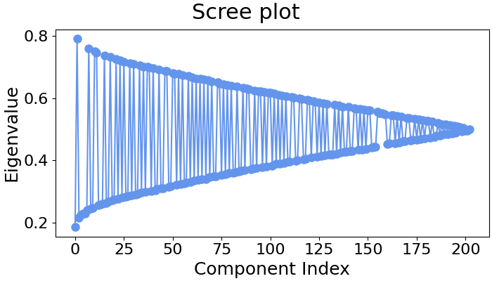

Note
Click here to download the full example code
Decoding (MVPA)¶
Design philosophy¶
Decoding (a.k.a. MVPA) in MNE largely follows the machine
learning API of the scikit-learn package.
Each estimator implements fit, transform, fit_transform, and
(optionally) inverse_transform methods. For more details on this design,
visit scikit-learn. For additional theoretical insights into the decoding
framework in MNE 1.
For ease of comprehension, we will denote instantiations of the class using the same name as the class but in small caps instead of camel cases.
Let’s start by loading data for a simple two-class problem:
import numpy as np
import matplotlib.pyplot as plt
from sklearn.pipeline import make_pipeline
from sklearn.preprocessing import StandardScaler
from sklearn.linear_model import LogisticRegression
import mne
from mne.datasets import sample
from mne.decoding import (SlidingEstimator, GeneralizingEstimator, Scaler,
cross_val_multiscore, LinearModel, get_coef,
Vectorizer, CSP)
data_path = sample.data_path()
subjects_dir = data_path + '/subjects'
raw_fname = data_path + '/MEG/sample/sample_audvis_raw.fif'
tmin, tmax = -0.200, 0.500
event_id = {'Auditory/Left': 1, 'Visual/Left': 3} # just use two
raw = mne.io.read_raw_fif(raw_fname, preload=True)
# The subsequent decoding analyses only capture evoked responses, so we can
# low-pass the MEG data. Usually a value more like 40 Hz would be used,
# but here low-pass at 20 so we can more heavily decimate, and allow
# the examlpe to run faster. The 2 Hz high-pass helps improve CSP.
raw.filter(2, 20)
events = mne.find_events(raw, 'STI 014')
# Set up pick list: EEG + MEG - bad channels (modify to your needs)
raw.info['bads'] += ['MEG 2443', 'EEG 053'] # bads + 2 more
# Read epochs
epochs = mne.Epochs(raw, events, event_id, tmin, tmax, proj=True,
picks=('grad', 'eog'), baseline=(None, 0.), preload=True,
reject=dict(grad=4000e-13, eog=150e-6), decim=10)
epochs.pick_types(meg=True, exclude='bads') # remove stim and EOG
del raw
X = epochs.get_data() # MEG signals: n_epochs, n_meg_channels, n_times
y = epochs.events[:, 2] # target: auditory left vs visual left
Out:
Opening raw data file /home/circleci/mne_data/MNE-sample-data/MEG/sample/sample_audvis_raw.fif...
Read a total of 3 projection items:
PCA-v1 (1 x 102) idle
PCA-v2 (1 x 102) idle
PCA-v3 (1 x 102) idle
Range : 25800 ... 192599 = 42.956 ... 320.670 secs
Ready.
Reading 0 ... 166799 = 0.000 ... 277.714 secs...
Filtering raw data in 1 contiguous segment
Setting up band-pass filter from 2 - 20 Hz
FIR filter parameters
---------------------
Designing a one-pass, zero-phase, non-causal bandpass filter:
- Windowed time-domain design (firwin) method
- Hamming window with 0.0194 passband ripple and 53 dB stopband attenuation
- Lower passband edge: 2.00
- Lower transition bandwidth: 2.00 Hz (-6 dB cutoff frequency: 1.00 Hz)
- Upper passband edge: 20.00 Hz
- Upper transition bandwidth: 5.00 Hz (-6 dB cutoff frequency: 22.50 Hz)
- Filter length: 993 samples (1.653 sec)
320 events found
Event IDs: [ 1 2 3 4 5 32]
Not setting metadata
Not setting metadata
145 matching events found
Setting baseline interval to [-0.19979521315838786, 0.0] sec
Applying baseline correction (mode: mean)
3 projection items activated
Loading data for 145 events and 421 original time points ...
Rejecting epoch based on EOG : ['EOG 061']
Rejecting epoch based on EOG : ['EOG 061']
Rejecting epoch based on EOG : ['EOG 061']
Rejecting epoch based on EOG : ['EOG 061']
Rejecting epoch based on EOG : ['EOG 061']
Rejecting epoch based on EOG : ['EOG 061']
Rejecting epoch based on EOG : ['EOG 061']
Rejecting epoch based on EOG : ['EOG 061']
Rejecting epoch based on EOG : ['EOG 061']
Rejecting epoch based on EOG : ['EOG 061']
Rejecting epoch based on EOG : ['EOG 061']
Rejecting epoch based on EOG : ['EOG 061']
Rejecting epoch based on EOG : ['EOG 061']
Rejecting epoch based on EOG : ['EOG 061']
Rejecting epoch based on EOG : ['EOG 061']
Rejecting epoch based on EOG : ['EOG 061']
Rejecting epoch based on EOG : ['EOG 061']
Rejecting epoch based on EOG : ['EOG 061']
Rejecting epoch based on EOG : ['EOG 061']
Rejecting epoch based on EOG : ['EOG 061']
Rejecting epoch based on EOG : ['EOG 061']
Rejecting epoch based on EOG : ['EOG 061']
22 bad epochs dropped
Removing projector <Projection | PCA-v1, active : True, n_channels : 102>
Removing projector <Projection | PCA-v2, active : True, n_channels : 102>
Removing projector <Projection | PCA-v3, active : True, n_channels : 102>
Transformation classes¶
Scaler¶
The mne.decoding.Scaler will standardize the data based on channel
scales. In the simplest modes scalings=None or scalings=dict(...),
each data channel type (e.g., mag, grad, eeg) is treated separately and
scaled by a constant. This is the approach used by e.g.,
mne.compute_covariance() to standardize channel scales.
If scalings='mean' or scalings='median', each channel is scaled using
empirical measures. Each channel is scaled independently by the mean and
standand deviation, or median and interquartile range, respectively, across
all epochs and time points during fit
(during training). The transform() method is
called to transform data (training or test set) by scaling all time points
and epochs on a channel-by-channel basis. To perform both the fit and
transform operations in a single call, the
fit_transform() method may be used. To invert the
transform, inverse_transform() can be used. For
scalings='median', scikit-learn version 0.17+ is required.
Note
Using this class is different from directly applying
sklearn.preprocessing.StandardScaler or
sklearn.preprocessing.RobustScaler offered by
scikit-learn. These scale each classification feature, e.g.
each time point for each channel, with mean and standard
deviation computed across epochs, whereas
mne.decoding.Scaler scales each channel using mean and
standard deviation computed across all of its time points
and epochs.
Vectorizer¶
Scikit-learn API provides functionality to chain transformers and estimators
by using sklearn.pipeline.Pipeline. We can construct decoding
pipelines and perform cross-validation and grid-search. However scikit-learn
transformers and estimators generally expect 2D data
(n_samples * n_features), whereas MNE transformers typically output data
with a higher dimensionality
(e.g. n_samples * n_channels * n_frequencies * n_times). A Vectorizer
therefore needs to be applied between the MNE and the scikit-learn steps
like:
# Uses all MEG sensors and time points as separate classification
# features, so the resulting filters used are spatio-temporal
clf = make_pipeline(Scaler(epochs.info),
Vectorizer(),
LogisticRegression(solver='lbfgs'))
scores = cross_val_multiscore(clf, X, y, cv=5, n_jobs=1)
# Mean scores across cross-validation splits
score = np.mean(scores, axis=0)
print('Spatio-temporal: %0.1f%%' % (100 * score,))
Out:
Spatio-temporal: 99.2%
PSDEstimator¶
The mne.decoding.PSDEstimator
computes the power spectral density (PSD) using the multitaper
method. It takes a 3D array as input, converts it into 2D and computes the
PSD.
FilterEstimator¶
The mne.decoding.FilterEstimator filters the 3D epochs data.
Spatial filters¶
Just like temporal filters, spatial filters provide weights to modify the data along the sensor dimension. They are popular in the BCI community because of their simplicity and ability to distinguish spatially-separated neural activity.
Common spatial pattern¶
mne.decoding.CSP is a technique to analyze multichannel data based
on recordings from two classes 2 (see also
https://en.wikipedia.org/wiki/Common_spatial_pattern).
Let \(X \in R^{C\times T}\) be a segment of data with \(C\) channels and \(T\) time points. The data at a single time point is denoted by \(x(t)\) such that \(X=[x(t), x(t+1), ..., x(t+T-1)]\). Common spatial pattern (CSP) finds a decomposition that projects the signal in the original sensor space to CSP space using the following transformation:
where each column of \(W \in R^{C\times C}\) is a spatial filter and each row of \(x_{CSP}\) is a CSP component. The matrix \(W\) is also called the de-mixing matrix in other contexts. Let \(\Sigma^{+} \in R^{C\times C}\) and \(\Sigma^{-} \in R^{C\times C}\) be the estimates of the covariance matrices of the two conditions. CSP analysis is given by the simultaneous diagonalization of the two covariance matrices
where \(\lambda^{C}\) is a diagonal matrix whose entries are the eigenvalues of the following generalized eigenvalue problem
Large entries in the diagonal matrix corresponds to a spatial filter which gives high variance in one class but low variance in the other. Thus, the filter facilitates discrimination between the two classes.
Examples
Note
The winning entry of the Grasp-and-lift EEG competition in Kaggle used
the CSP implementation in MNE and was featured as
a script of the week.
We can use CSP with these data with:
csp = CSP(n_components=3, norm_trace=False)
clf_csp = make_pipeline(csp, LinearModel(LogisticRegression(solver='lbfgs')))
scores = cross_val_multiscore(clf_csp, X, y, cv=5, n_jobs=1)
print('CSP: %0.1f%%' % (100 * scores.mean(),))
Out:
Computing rank from data with rank=None
Using tolerance 4.4e-11 (2.2e-16 eps * 203 dim * 9.7e+02 max singular value)
Estimated rank (mag): 203
MAG: rank 203 computed from 203 data channels with 0 projectors
Reducing data rank from 203 -> 203
Estimating covariance using EMPIRICAL
Done.
Computing rank from data with rank=None
Using tolerance 5.2e-11 (2.2e-16 eps * 203 dim * 1.1e+03 max singular value)
Estimated rank (mag): 203
MAG: rank 203 computed from 203 data channels with 0 projectors
Reducing data rank from 203 -> 203
Estimating covariance using EMPIRICAL
Done.
Computing rank from data with rank=None
Using tolerance 4.2e-11 (2.2e-16 eps * 203 dim * 9.3e+02 max singular value)
Estimated rank (mag): 203
MAG: rank 203 computed from 203 data channels with 0 projectors
Reducing data rank from 203 -> 203
Estimating covariance using EMPIRICAL
Done.
Computing rank from data with rank=None
Using tolerance 5.2e-11 (2.2e-16 eps * 203 dim * 1.2e+03 max singular value)
Estimated rank (mag): 203
MAG: rank 203 computed from 203 data channels with 0 projectors
Reducing data rank from 203 -> 203
Estimating covariance using EMPIRICAL
Done.
Computing rank from data with rank=None
Using tolerance 4.2e-11 (2.2e-16 eps * 203 dim * 9.4e+02 max singular value)
Estimated rank (mag): 203
MAG: rank 203 computed from 203 data channels with 0 projectors
Reducing data rank from 203 -> 203
Estimating covariance using EMPIRICAL
Done.
Computing rank from data with rank=None
Using tolerance 5.2e-11 (2.2e-16 eps * 203 dim * 1.1e+03 max singular value)
Estimated rank (mag): 203
MAG: rank 203 computed from 203 data channels with 0 projectors
Reducing data rank from 203 -> 203
Estimating covariance using EMPIRICAL
Done.
Computing rank from data with rank=None
Using tolerance 4.2e-11 (2.2e-16 eps * 203 dim * 9.4e+02 max singular value)
Estimated rank (mag): 203
MAG: rank 203 computed from 203 data channels with 0 projectors
Reducing data rank from 203 -> 203
Estimating covariance using EMPIRICAL
Done.
Computing rank from data with rank=None
Using tolerance 5e-11 (2.2e-16 eps * 203 dim * 1.1e+03 max singular value)
Estimated rank (mag): 203
MAG: rank 203 computed from 203 data channels with 0 projectors
Reducing data rank from 203 -> 203
Estimating covariance using EMPIRICAL
Done.
Computing rank from data with rank=None
Using tolerance 4.2e-11 (2.2e-16 eps * 203 dim * 9.3e+02 max singular value)
Estimated rank (mag): 203
MAG: rank 203 computed from 203 data channels with 0 projectors
Reducing data rank from 203 -> 203
Estimating covariance using EMPIRICAL
Done.
Computing rank from data with rank=None
Using tolerance 5.2e-11 (2.2e-16 eps * 203 dim * 1.1e+03 max singular value)
Estimated rank (mag): 203
MAG: rank 203 computed from 203 data channels with 0 projectors
Reducing data rank from 203 -> 203
Estimating covariance using EMPIRICAL
Done.
CSP: 87.0%
Source power comodulation (SPoC)¶
Source Power Comodulation (mne.decoding.SPoC)
3 identifies the composition of
orthogonal spatial filters that maximally correlate with a continuous target.
SPoC can be seen as an extension of the CSP where the target is driven by a continuous variable rather than a discrete variable. Typical applications include extraction of motor patterns using EMG power or audio patterns using sound envelope.
Examples
xDAWN¶
mne.preprocessing.Xdawn is a spatial filtering method designed to
improve the signal to signal + noise ratio (SSNR) of the ERP responses
4. Xdawn was originally
designed for P300 evoked potential by enhancing the target response with
respect to the non-target response. The implementation in MNE-Python is a
generalization to any type of ERP.
Effect-matched spatial filtering¶
The result of mne.decoding.EMS is a spatial filter at each time
point and a corresponding time course 5.
Intuitively, the result gives the similarity between the filter at
each time point and the data vector (sensors) at that time point.
Patterns vs. filters¶
When interpreting the components of the CSP (or spatial filters in general), it is often more intuitive to think about how \(x(t)\) is composed of the different CSP components \(x_{CSP}(t)\). In other words, we can rewrite Equation (1) as follows:
The columns of the matrix \((W^{-1})^T\) are called spatial patterns. This is also called the mixing matrix. The example Linear classifier on sensor data with plot patterns and filters discusses the difference between patterns and filters.
These can be plotted with:
# Fit CSP on full data and plot
csp.fit(X, y)
csp.plot_patterns(epochs.info)
csp.plot_filters(epochs.info, scalings=1e-9)
- 

Out:
Computing rank from data with rank=None
Using tolerance 4.8e-11 (2.2e-16 eps * 203 dim * 1.1e+03 max singular value)
Estimated rank (mag): 203
MAG: rank 203 computed from 203 data channels with 0 projectors
Reducing data rank from 203 -> 203
Estimating covariance using EMPIRICAL
Done.
Computing rank from data with rank=None
Using tolerance 5.7e-11 (2.2e-16 eps * 203 dim * 1.3e+03 max singular value)
Estimated rank (mag): 203
MAG: rank 203 computed from 203 data channels with 0 projectors
Reducing data rank from 203 -> 203
Estimating covariance using EMPIRICAL
Done.
Decoding over time¶
This strategy consists in fitting a multivariate predictive model on each
time instant and evaluating its performance at the same instant on new
epochs. The mne.decoding.SlidingEstimator will take as input a
pair of features \(X\) and targets \(y\), where \(X\) has
more than 2 dimensions. For decoding over time the data \(X\)
is the epochs data of shape n_epochs x n_channels x n_times. As the
last dimension of \(X\) is the time, an estimator will be fit
on every time instant.
This approach is analogous to SlidingEstimator-based approaches in fMRI, where here we are interested in when one can discriminate experimental conditions and therefore figure out when the effect of interest happens.
When working with linear models as estimators, this approach boils down to estimating a discriminative spatial filter for each time instant.
Temporal decoding¶
We’ll use a Logistic Regression for a binary classification as machine learning model.
# We will train the classifier on all left visual vs auditory trials on MEG
clf = make_pipeline(StandardScaler(), LogisticRegression(solver='lbfgs'))
time_decod = SlidingEstimator(clf, n_jobs=1, scoring='roc_auc', verbose=True)
scores = cross_val_multiscore(time_decod, X, y, cv=5, n_jobs=1)
# Mean scores across cross-validation splits
scores = np.mean(scores, axis=0)
# Plot
fig, ax = plt.subplots()
ax.plot(epochs.times, scores, label='score')
ax.axhline(.5, color='k', linestyle='--', label='chance')
ax.set_xlabel('Times')
ax.set_ylabel('AUC') # Area Under the Curve
ax.legend()
ax.axvline(.0, color='k', linestyle='-')
ax.set_title('Sensor space decoding')

Out:
0%| | Fitting SlidingEstimator : 0/43 [00:00<?, ?it/s]
2%|2 | Fitting SlidingEstimator : 1/43 [00:00<00:03, 13.61it/s]
5%|4 | Fitting SlidingEstimator : 2/43 [00:00<00:03, 12.41it/s]
7%|6 | Fitting SlidingEstimator : 3/43 [00:00<00:02, 15.36it/s]
9%|9 | Fitting SlidingEstimator : 4/43 [00:00<00:03, 10.92it/s]
12%|#1 | Fitting SlidingEstimator : 5/43 [00:00<00:03, 12.65it/s]
14%|#3 | Fitting SlidingEstimator : 6/43 [00:00<00:03, 12.03it/s]
16%|#6 | Fitting SlidingEstimator : 7/43 [00:00<00:03, 11.67it/s]
19%|#8 | Fitting SlidingEstimator : 8/43 [00:00<00:02, 12.08it/s]
21%|## | Fitting SlidingEstimator : 9/43 [00:00<00:02, 11.68it/s]
23%|##3 | Fitting SlidingEstimator : 10/43 [00:00<00:02, 12.58it/s]
26%|##5 | Fitting SlidingEstimator : 11/43 [00:00<00:02, 11.26it/s]
28%|##7 | Fitting SlidingEstimator : 12/43 [00:00<00:02, 12.06it/s]
30%|### | Fitting SlidingEstimator : 13/43 [00:01<00:02, 11.81it/s]
33%|###2 | Fitting SlidingEstimator : 14/43 [00:01<00:02, 11.62it/s]
35%|###4 | Fitting SlidingEstimator : 15/43 [00:01<00:02, 11.87it/s]
37%|###7 | Fitting SlidingEstimator : 16/43 [00:01<00:02, 12.53it/s]
40%|###9 | Fitting SlidingEstimator : 17/43 [00:01<00:02, 12.72it/s]
42%|####1 | Fitting SlidingEstimator : 18/43 [00:01<00:01, 13.34it/s]
44%|####4 | Fitting SlidingEstimator : 19/43 [00:01<00:01, 13.49it/s]
47%|####6 | Fitting SlidingEstimator : 20/43 [00:01<00:01, 14.08it/s]
49%|####8 | Fitting SlidingEstimator : 21/43 [00:01<00:01, 14.16it/s]
51%|#####1 | Fitting SlidingEstimator : 22/43 [00:01<00:01, 14.70it/s]
56%|#####5 | Fitting SlidingEstimator : 24/43 [00:01<00:01, 15.26it/s]
58%|#####8 | Fitting SlidingEstimator : 25/43 [00:01<00:01, 14.70it/s]
60%|###### | Fitting SlidingEstimator : 26/43 [00:01<00:01, 14.78it/s]
63%|######2 | Fitting SlidingEstimator : 27/43 [00:01<00:01, 15.26it/s]
65%|######5 | Fitting SlidingEstimator : 28/43 [00:01<00:01, 14.78it/s]
67%|######7 | Fitting SlidingEstimator : 29/43 [00:02<00:00, 14.80it/s]
70%|######9 | Fitting SlidingEstimator : 30/43 [00:02<00:00, 15.26it/s]
72%|#######2 | Fitting SlidingEstimator : 31/43 [00:02<00:00, 14.80it/s]
74%|#######4 | Fitting SlidingEstimator : 32/43 [00:02<00:00, 14.81it/s]
77%|#######6 | Fitting SlidingEstimator : 33/43 [00:02<00:00, 15.26it/s]
79%|#######9 | Fitting SlidingEstimator : 34/43 [00:02<00:00, 14.80it/s]
81%|########1 | Fitting SlidingEstimator : 35/43 [00:02<00:00, 14.82it/s]
84%|########3 | Fitting SlidingEstimator : 36/43 [00:02<00:00, 15.24it/s]
86%|########6 | Fitting SlidingEstimator : 37/43 [00:02<00:00, 14.73it/s]
88%|########8 | Fitting SlidingEstimator : 38/43 [00:02<00:00, 14.84it/s]
91%|######### | Fitting SlidingEstimator : 39/43 [00:02<00:00, 15.27it/s]
93%|#########3| Fitting SlidingEstimator : 40/43 [00:02<00:00, 14.81it/s]
95%|#########5| Fitting SlidingEstimator : 41/43 [00:02<00:00, 13.63it/s]
98%|#########7| Fitting SlidingEstimator : 42/43 [00:03<00:00, 14.04it/s]
100%|##########| Fitting SlidingEstimator : 43/43 [00:03<00:00, 14.02it/s]
100%|##########| Fitting SlidingEstimator : 43/43 [00:03<00:00, 13.97it/s]
0%| | Fitting SlidingEstimator : 0/43 [00:00<?, ?it/s]
2%|2 | Fitting SlidingEstimator : 1/43 [00:00<00:01, 28.40it/s]
5%|4 | Fitting SlidingEstimator : 2/43 [00:00<00:01, 28.93it/s]
7%|6 | Fitting SlidingEstimator : 3/43 [00:00<00:01, 28.64it/s]
9%|9 | Fitting SlidingEstimator : 4/43 [00:00<00:01, 20.58it/s]
12%|#1 | Fitting SlidingEstimator : 5/43 [00:00<00:01, 21.99it/s]
14%|#3 | Fitting SlidingEstimator : 6/43 [00:00<00:01, 20.07it/s]
16%|#6 | Fitting SlidingEstimator : 7/43 [00:00<00:02, 17.38it/s]
19%|#8 | Fitting SlidingEstimator : 8/43 [00:00<00:02, 15.55it/s]
21%|## | Fitting SlidingEstimator : 9/43 [00:00<00:02, 14.16it/s]
23%|##3 | Fitting SlidingEstimator : 10/43 [00:00<00:02, 13.77it/s]
26%|##5 | Fitting SlidingEstimator : 11/43 [00:00<00:02, 13.02it/s]
28%|##7 | Fitting SlidingEstimator : 12/43 [00:00<00:02, 12.86it/s]
30%|### | Fitting SlidingEstimator : 13/43 [00:00<00:02, 12.96it/s]
33%|###2 | Fitting SlidingEstimator : 14/43 [00:00<00:02, 13.62it/s]
35%|###4 | Fitting SlidingEstimator : 15/43 [00:01<00:02, 13.09it/s]
37%|###7 | Fitting SlidingEstimator : 16/43 [00:01<00:02, 12.90it/s]
40%|###9 | Fitting SlidingEstimator : 17/43 [00:01<00:01, 13.04it/s]
44%|####4 | Fitting SlidingEstimator : 19/43 [00:01<00:01, 14.78it/s]
47%|####6 | Fitting SlidingEstimator : 20/43 [00:01<00:01, 14.31it/s]
49%|####8 | Fitting SlidingEstimator : 21/43 [00:01<00:01, 14.08it/s]
51%|#####1 | Fitting SlidingEstimator : 22/43 [00:01<00:01, 13.96it/s]
53%|#####3 | Fitting SlidingEstimator : 23/43 [00:01<00:01, 14.48it/s]
58%|#####8 | Fitting SlidingEstimator : 25/43 [00:01<00:01, 15.00it/s]
60%|###### | Fitting SlidingEstimator : 26/43 [00:01<00:01, 14.56it/s]
63%|######2 | Fitting SlidingEstimator : 27/43 [00:01<00:01, 14.59it/s]
65%|######5 | Fitting SlidingEstimator : 28/43 [00:01<00:00, 15.05it/s]
67%|######7 | Fitting SlidingEstimator : 29/43 [00:01<00:00, 14.54it/s]
70%|######9 | Fitting SlidingEstimator : 30/43 [00:02<00:00, 14.65it/s]
72%|#######2 | Fitting SlidingEstimator : 31/43 [00:02<00:00, 15.09it/s]
74%|#######4 | Fitting SlidingEstimator : 32/43 [00:02<00:00, 15.10it/s]
77%|#######6 | Fitting SlidingEstimator : 33/43 [00:02<00:00, 15.49it/s]
79%|#######9 | Fitting SlidingEstimator : 34/43 [00:02<00:00, 14.95it/s]
81%|########1 | Fitting SlidingEstimator : 35/43 [00:02<00:00, 15.07it/s]
84%|########3 | Fitting SlidingEstimator : 36/43 [00:02<00:00, 15.49it/s]
86%|########6 | Fitting SlidingEstimator : 37/43 [00:02<00:00, 15.04it/s]
88%|########8 | Fitting SlidingEstimator : 38/43 [00:02<00:00, 15.03it/s]
91%|######### | Fitting SlidingEstimator : 39/43 [00:02<00:00, 15.40it/s]
93%|#########3| Fitting SlidingEstimator : 40/43 [00:02<00:00, 14.97it/s]
95%|#########5| Fitting SlidingEstimator : 41/43 [00:02<00:00, 14.53it/s]
98%|#########7| Fitting SlidingEstimator : 42/43 [00:02<00:00, 14.63it/s]
100%|##########| Fitting SlidingEstimator : 43/43 [00:02<00:00, 15.10it/s]
100%|##########| Fitting SlidingEstimator : 43/43 [00:02<00:00, 14.89it/s]
0%| | Fitting SlidingEstimator : 0/43 [00:00<?, ?it/s]
2%|2 | Fitting SlidingEstimator : 1/43 [00:00<00:01, 26.96it/s]
5%|4 | Fitting SlidingEstimator : 2/43 [00:00<00:02, 15.14it/s]
9%|9 | Fitting SlidingEstimator : 4/43 [00:00<00:02, 17.80it/s]
12%|#1 | Fitting SlidingEstimator : 5/43 [00:00<00:02, 14.45it/s]
14%|#3 | Fitting SlidingEstimator : 6/43 [00:00<00:02, 15.00it/s]
16%|#6 | Fitting SlidingEstimator : 7/43 [00:00<00:02, 16.27it/s]
19%|#8 | Fitting SlidingEstimator : 8/43 [00:00<00:02, 14.94it/s]
21%|## | Fitting SlidingEstimator : 9/43 [00:00<00:02, 14.01it/s]
23%|##3 | Fitting SlidingEstimator : 10/43 [00:00<00:02, 14.13it/s]
26%|##5 | Fitting SlidingEstimator : 11/43 [00:00<00:02, 15.02it/s]
28%|##7 | Fitting SlidingEstimator : 12/43 [00:00<00:02, 14.27it/s]
30%|### | Fitting SlidingEstimator : 13/43 [00:00<00:02, 14.34it/s]
35%|###4 | Fitting SlidingEstimator : 15/43 [00:01<00:01, 14.35it/s]
37%|###7 | Fitting SlidingEstimator : 16/43 [00:01<00:01, 13.68it/s]
40%|###9 | Fitting SlidingEstimator : 17/43 [00:01<00:01, 13.25it/s]
42%|####1 | Fitting SlidingEstimator : 18/43 [00:01<00:01, 13.10it/s]
44%|####4 | Fitting SlidingEstimator : 19/43 [00:01<00:01, 13.13it/s]
47%|####6 | Fitting SlidingEstimator : 20/43 [00:01<00:01, 13.69it/s]
49%|####8 | Fitting SlidingEstimator : 21/43 [00:01<00:01, 13.97it/s]
51%|#####1 | Fitting SlidingEstimator : 22/43 [00:01<00:01, 14.50it/s]
53%|#####3 | Fitting SlidingEstimator : 23/43 [00:01<00:01, 14.56it/s]
56%|#####5 | Fitting SlidingEstimator : 24/43 [00:01<00:01, 14.98it/s]
58%|#####8 | Fitting SlidingEstimator : 25/43 [00:01<00:01, 14.57it/s]
63%|######2 | Fitting SlidingEstimator : 27/43 [00:01<00:01, 14.95it/s]
65%|######5 | Fitting SlidingEstimator : 28/43 [00:01<00:01, 14.59it/s]
67%|######7 | Fitting SlidingEstimator : 29/43 [00:02<00:00, 14.25it/s]
70%|######9 | Fitting SlidingEstimator : 30/43 [00:02<00:00, 13.88it/s]
72%|#######2 | Fitting SlidingEstimator : 31/43 [00:02<00:00, 13.95it/s]
74%|#######4 | Fitting SlidingEstimator : 32/43 [00:02<00:00, 14.39it/s]
79%|#######9 | Fitting SlidingEstimator : 34/43 [00:02<00:00, 14.84it/s]
81%|########1 | Fitting SlidingEstimator : 35/43 [00:02<00:00, 13.75it/s]
84%|########3 | Fitting SlidingEstimator : 36/43 [00:02<00:00, 14.14it/s]
86%|########6 | Fitting SlidingEstimator : 37/43 [00:02<00:00, 14.22it/s]
88%|########8 | Fitting SlidingEstimator : 38/43 [00:02<00:00, 14.60it/s]
91%|######### | Fitting SlidingEstimator : 39/43 [00:02<00:00, 14.25it/s]
93%|#########3| Fitting SlidingEstimator : 40/43 [00:02<00:00, 13.95it/s]
95%|#########5| Fitting SlidingEstimator : 41/43 [00:02<00:00, 14.01it/s]
98%|#########7| Fitting SlidingEstimator : 42/43 [00:02<00:00, 14.41it/s]
100%|##########| Fitting SlidingEstimator : 43/43 [00:03<00:00, 14.39it/s]
100%|##########| Fitting SlidingEstimator : 43/43 [00:03<00:00, 14.32it/s]
0%| | Fitting SlidingEstimator : 0/43 [00:00<?, ?it/s]
2%|2 | Fitting SlidingEstimator : 1/43 [00:00<00:01, 29.26it/s]
5%|4 | Fitting SlidingEstimator : 2/43 [00:00<00:03, 13.61it/s]
7%|6 | Fitting SlidingEstimator : 3/43 [00:00<00:03, 12.41it/s]
9%|9 | Fitting SlidingEstimator : 4/43 [00:00<00:02, 14.68it/s]
12%|#1 | Fitting SlidingEstimator : 5/43 [00:00<00:02, 14.58it/s]
14%|#3 | Fitting SlidingEstimator : 6/43 [00:00<00:02, 13.68it/s]
16%|#6 | Fitting SlidingEstimator : 7/43 [00:00<00:02, 12.89it/s]
19%|#8 | Fitting SlidingEstimator : 8/43 [00:00<00:02, 13.17it/s]
21%|## | Fitting SlidingEstimator : 9/43 [00:00<00:02, 11.92it/s]
23%|##3 | Fitting SlidingEstimator : 10/43 [00:00<00:02, 12.25it/s]
26%|##5 | Fitting SlidingEstimator : 11/43 [00:00<00:02, 11.95it/s]
28%|##7 | Fitting SlidingEstimator : 12/43 [00:00<00:02, 12.76it/s]
30%|### | Fitting SlidingEstimator : 13/43 [00:01<00:02, 12.39it/s]
33%|###2 | Fitting SlidingEstimator : 14/43 [00:01<00:02, 12.14it/s]
35%|###4 | Fitting SlidingEstimator : 15/43 [00:01<00:02, 12.36it/s]
37%|###7 | Fitting SlidingEstimator : 16/43 [00:01<00:02, 13.03it/s]
42%|####1 | Fitting SlidingEstimator : 18/43 [00:01<00:01, 13.77it/s]
47%|####6 | Fitting SlidingEstimator : 20/43 [00:01<00:01, 14.44it/s]
49%|####8 | Fitting SlidingEstimator : 21/43 [00:01<00:01, 13.94it/s]
51%|#####1 | Fitting SlidingEstimator : 22/43 [00:01<00:01, 14.08it/s]
53%|#####3 | Fitting SlidingEstimator : 23/43 [00:01<00:01, 14.59it/s]
56%|#####5 | Fitting SlidingEstimator : 24/43 [00:01<00:01, 14.41it/s]
60%|###### | Fitting SlidingEstimator : 26/43 [00:01<00:01, 15.14it/s]
63%|######2 | Fitting SlidingEstimator : 27/43 [00:01<00:01, 15.59it/s]
65%|######5 | Fitting SlidingEstimator : 28/43 [00:01<00:00, 15.57it/s]
67%|######7 | Fitting SlidingEstimator : 29/43 [00:01<00:00, 16.00it/s]
70%|######9 | Fitting SlidingEstimator : 30/43 [00:02<00:00, 15.45it/s]
72%|#######2 | Fitting SlidingEstimator : 31/43 [00:02<00:00, 15.44it/s]
74%|#######4 | Fitting SlidingEstimator : 32/43 [00:02<00:00, 15.83it/s]
77%|#######6 | Fitting SlidingEstimator : 33/43 [00:02<00:00, 15.37it/s]
79%|#######9 | Fitting SlidingEstimator : 34/43 [00:02<00:00, 15.35it/s]
81%|########1 | Fitting SlidingEstimator : 35/43 [00:02<00:00, 15.76it/s]
84%|########3 | Fitting SlidingEstimator : 36/43 [00:02<00:00, 15.69it/s]
86%|########6 | Fitting SlidingEstimator : 37/43 [00:02<00:00, 16.10it/s]
88%|########8 | Fitting SlidingEstimator : 38/43 [00:02<00:00, 15.64it/s]
91%|######### | Fitting SlidingEstimator : 39/43 [00:02<00:00, 15.62it/s]
93%|#########3| Fitting SlidingEstimator : 40/43 [00:02<00:00, 15.14it/s]
95%|#########5| Fitting SlidingEstimator : 41/43 [00:02<00:00, 14.64it/s]
98%|#########7| Fitting SlidingEstimator : 42/43 [00:02<00:00, 15.04it/s]
100%|##########| Fitting SlidingEstimator : 43/43 [00:02<00:00, 14.67it/s]
100%|##########| Fitting SlidingEstimator : 43/43 [00:02<00:00, 14.61it/s]
0%| | Fitting SlidingEstimator : 0/43 [00:00<?, ?it/s]
2%|2 | Fitting SlidingEstimator : 1/43 [00:00<00:01, 28.55it/s]
5%|4 | Fitting SlidingEstimator : 2/43 [00:00<00:01, 24.26it/s]
7%|6 | Fitting SlidingEstimator : 3/43 [00:00<00:01, 25.64it/s]
9%|9 | Fitting SlidingEstimator : 4/43 [00:00<00:02, 18.78it/s]
12%|#1 | Fitting SlidingEstimator : 5/43 [00:00<00:02, 15.74it/s]
14%|#3 | Fitting SlidingEstimator : 6/43 [00:00<00:02, 15.59it/s]
16%|#6 | Fitting SlidingEstimator : 7/43 [00:00<00:02, 16.78it/s]
19%|#8 | Fitting SlidingEstimator : 8/43 [00:00<00:02, 15.34it/s]
21%|## | Fitting SlidingEstimator : 9/43 [00:00<00:02, 14.21it/s]
23%|##3 | Fitting SlidingEstimator : 10/43 [00:00<00:02, 14.43it/s]
26%|##5 | Fitting SlidingEstimator : 11/43 [00:00<00:02, 15.33it/s]
28%|##7 | Fitting SlidingEstimator : 12/43 [00:00<00:02, 14.64it/s]
30%|### | Fitting SlidingEstimator : 13/43 [00:00<00:02, 13.74it/s]
33%|###2 | Fitting SlidingEstimator : 14/43 [00:00<00:02, 13.96it/s]
35%|###4 | Fitting SlidingEstimator : 15/43 [00:01<00:02, 13.48it/s]
37%|###7 | Fitting SlidingEstimator : 16/43 [00:01<00:01, 14.15it/s]
40%|###9 | Fitting SlidingEstimator : 17/43 [00:01<00:01, 13.68it/s]
42%|####1 | Fitting SlidingEstimator : 18/43 [00:01<00:01, 13.77it/s]
44%|####4 | Fitting SlidingEstimator : 19/43 [00:01<00:01, 14.34it/s]
47%|####6 | Fitting SlidingEstimator : 20/43 [00:01<00:01, 14.46it/s]
49%|####8 | Fitting SlidingEstimator : 21/43 [00:01<00:01, 15.03it/s]
51%|#####1 | Fitting SlidingEstimator : 22/43 [00:01<00:01, 15.03it/s]
53%|#####3 | Fitting SlidingEstimator : 23/43 [00:01<00:01, 15.55it/s]
56%|#####5 | Fitting SlidingEstimator : 24/43 [00:01<00:01, 15.57it/s]
58%|#####8 | Fitting SlidingEstimator : 25/43 [00:01<00:01, 16.09it/s]
60%|###### | Fitting SlidingEstimator : 26/43 [00:01<00:01, 16.02it/s]
63%|######2 | Fitting SlidingEstimator : 27/43 [00:01<00:00, 16.50it/s]
65%|######5 | Fitting SlidingEstimator : 28/43 [00:01<00:00, 15.90it/s]
67%|######7 | Fitting SlidingEstimator : 29/43 [00:01<00:00, 15.26it/s]
70%|######9 | Fitting SlidingEstimator : 30/43 [00:01<00:00, 15.26it/s]
72%|#######2 | Fitting SlidingEstimator : 31/43 [00:02<00:00, 15.72it/s]
74%|#######4 | Fitting SlidingEstimator : 32/43 [00:02<00:00, 14.31it/s]
77%|#######6 | Fitting SlidingEstimator : 33/43 [00:02<00:00, 14.77it/s]
79%|#######9 | Fitting SlidingEstimator : 34/43 [00:02<00:00, 14.80it/s]
81%|########1 | Fitting SlidingEstimator : 35/43 [00:02<00:00, 15.24it/s]
84%|########3 | Fitting SlidingEstimator : 36/43 [00:02<00:00, 15.25it/s]
86%|########6 | Fitting SlidingEstimator : 37/43 [00:02<00:00, 15.68it/s]
88%|########8 | Fitting SlidingEstimator : 38/43 [00:02<00:00, 15.19it/s]
91%|######### | Fitting SlidingEstimator : 39/43 [00:02<00:00, 15.19it/s]
93%|#########3| Fitting SlidingEstimator : 40/43 [00:02<00:00, 15.61it/s]
95%|#########5| Fitting SlidingEstimator : 41/43 [00:02<00:00, 15.00it/s]
98%|#########7| Fitting SlidingEstimator : 42/43 [00:02<00:00, 14.71it/s]
100%|##########| Fitting SlidingEstimator : 43/43 [00:02<00:00, 15.25it/s]
You can retrieve the spatial filters and spatial patterns if you explicitly use a LinearModel
clf = make_pipeline(StandardScaler(),
LinearModel(LogisticRegression(solver='lbfgs')))
time_decod = SlidingEstimator(clf, n_jobs=1, scoring='roc_auc', verbose=True)
time_decod.fit(X, y)
coef = get_coef(time_decod, 'patterns_', inverse_transform=True)
evoked_time_gen = mne.EvokedArray(coef, epochs.info, tmin=epochs.times[0])
joint_kwargs = dict(ts_args=dict(time_unit='s'),
topomap_args=dict(time_unit='s'))
evoked_time_gen.plot_joint(times=np.arange(0., .500, .100), title='patterns',
**joint_kwargs)
Out:
0%| | Fitting SlidingEstimator : 0/43 [00:00<?, ?it/s]
2%|2 | Fitting SlidingEstimator : 1/43 [00:00<00:02, 14.24it/s]
5%|4 | Fitting SlidingEstimator : 2/43 [00:00<00:03, 12.97it/s]
7%|6 | Fitting SlidingEstimator : 3/43 [00:00<00:03, 10.60it/s]
9%|9 | Fitting SlidingEstimator : 4/43 [00:00<00:03, 10.46it/s]
12%|#1 | Fitting SlidingEstimator : 5/43 [00:00<00:03, 11.20it/s]
14%|#3 | Fitting SlidingEstimator : 6/43 [00:00<00:03, 10.96it/s]
16%|#6 | Fitting SlidingEstimator : 7/43 [00:00<00:02, 12.22it/s]
19%|#8 | Fitting SlidingEstimator : 8/43 [00:00<00:02, 11.75it/s]
21%|## | Fitting SlidingEstimator : 9/43 [00:00<00:02, 11.47it/s]
23%|##3 | Fitting SlidingEstimator : 10/43 [00:00<00:02, 11.27it/s]
26%|##5 | Fitting SlidingEstimator : 11/43 [00:00<00:02, 11.13it/s]
28%|##7 | Fitting SlidingEstimator : 12/43 [00:01<00:02, 11.00it/s]
30%|### | Fitting SlidingEstimator : 13/43 [00:01<00:02, 10.91it/s]
33%|###2 | Fitting SlidingEstimator : 14/43 [00:01<00:02, 10.79it/s]
35%|###4 | Fitting SlidingEstimator : 15/43 [00:01<00:02, 10.75it/s]
37%|###7 | Fitting SlidingEstimator : 16/43 [00:01<00:02, 11.02it/s]
40%|###9 | Fitting SlidingEstimator : 17/43 [00:01<00:02, 11.64it/s]
42%|####1 | Fitting SlidingEstimator : 18/43 [00:01<00:02, 11.84it/s]
44%|####4 | Fitting SlidingEstimator : 19/43 [00:01<00:01, 12.34it/s]
47%|####6 | Fitting SlidingEstimator : 20/43 [00:01<00:01, 12.24it/s]
49%|####8 | Fitting SlidingEstimator : 21/43 [00:01<00:01, 12.42it/s]
51%|#####1 | Fitting SlidingEstimator : 22/43 [00:01<00:01, 12.83it/s]
53%|#####3 | Fitting SlidingEstimator : 23/43 [00:01<00:01, 12.71it/s]
56%|#####5 | Fitting SlidingEstimator : 24/43 [00:01<00:01, 12.87it/s]
58%|#####8 | Fitting SlidingEstimator : 25/43 [00:01<00:01, 13.33it/s]
60%|###### | Fitting SlidingEstimator : 26/43 [00:02<00:01, 13.07it/s]
63%|######2 | Fitting SlidingEstimator : 27/43 [00:02<00:01, 13.21it/s]
65%|######5 | Fitting SlidingEstimator : 28/43 [00:02<00:01, 13.66it/s]
67%|######7 | Fitting SlidingEstimator : 29/43 [00:02<00:01, 13.31it/s]
70%|######9 | Fitting SlidingEstimator : 30/43 [00:02<00:00, 13.11it/s]
72%|#######2 | Fitting SlidingEstimator : 31/43 [00:02<00:00, 12.83it/s]
74%|#######4 | Fitting SlidingEstimator : 32/43 [00:02<00:00, 12.49it/s]
77%|#######6 | Fitting SlidingEstimator : 33/43 [00:02<00:00, 12.56it/s]
79%|#######9 | Fitting SlidingEstimator : 34/43 [00:02<00:00, 12.57it/s]
81%|########1 | Fitting SlidingEstimator : 35/43 [00:02<00:00, 13.01it/s]
84%|########3 | Fitting SlidingEstimator : 36/43 [00:02<00:00, 12.71it/s]
86%|########6 | Fitting SlidingEstimator : 37/43 [00:02<00:00, 12.53it/s]
88%|########8 | Fitting SlidingEstimator : 38/43 [00:03<00:00, 12.71it/s]
91%|######### | Fitting SlidingEstimator : 39/43 [00:03<00:00, 12.52it/s]
93%|#########3| Fitting SlidingEstimator : 40/43 [00:03<00:00, 12.93it/s]
95%|#########5| Fitting SlidingEstimator : 41/43 [00:03<00:00, 12.70it/s]
98%|#########7| Fitting SlidingEstimator : 42/43 [00:03<00:00, 12.53it/s]
100%|##########| Fitting SlidingEstimator : 43/43 [00:03<00:00, 12.66it/s]
100%|##########| Fitting SlidingEstimator : 43/43 [00:03<00:00, 12.47it/s]
No projector specified for this dataset. Please consider the method self.add_proj.
Temporal generalization¶
Temporal generalization is an extension of the decoding over time approach. It consists in evaluating whether the model estimated at a particular time instant accurately predicts any other time instant. It is analogous to transferring a trained model to a distinct learning problem, where the problems correspond to decoding the patterns of brain activity recorded at distinct time instants.
The object to for Temporal generalization is
mne.decoding.GeneralizingEstimator. It expects as input \(X\)
and \(y\) (similarly to SlidingEstimator) but
generates predictions from each model for all time instants. The class
GeneralizingEstimator is generic and will treat the
last dimension as the one to be used for generalization testing. For
convenience, here, we refer to it as different tasks. If \(X\)
corresponds to epochs data then the last dimension is time.
This runs the analysis used in 6 and further detailed in 7:
# define the Temporal generalization object
time_gen = GeneralizingEstimator(clf, n_jobs=1, scoring='roc_auc',
verbose=True)
scores = cross_val_multiscore(time_gen, X, y, cv=5, n_jobs=1)
# Mean scores across cross-validation splits
scores = np.mean(scores, axis=0)
# Plot the diagonal (it's exactly the same as the time-by-time decoding above)
fig, ax = plt.subplots()
ax.plot(epochs.times, np.diag(scores), label='score')
ax.axhline(.5, color='k', linestyle='--', label='chance')
ax.set_xlabel('Times')
ax.set_ylabel('AUC')
ax.legend()
ax.axvline(.0, color='k', linestyle='-')
ax.set_title('Decoding MEG sensors over time')

Out:
0%| | Fitting GeneralizingEstimator : 0/43 [00:00<?, ?it/s]
2%|2 | Fitting GeneralizingEstimator : 1/43 [00:00<00:03, 12.82it/s]
5%|4 | Fitting GeneralizingEstimator : 2/43 [00:00<00:02, 17.91it/s]
7%|6 | Fitting GeneralizingEstimator : 3/43 [00:00<00:02, 14.57it/s]
9%|9 | Fitting GeneralizingEstimator : 4/43 [00:00<00:02, 14.72it/s]
12%|#1 | Fitting GeneralizingEstimator : 5/43 [00:00<00:02, 16.52it/s]
14%|#3 | Fitting GeneralizingEstimator : 6/43 [00:00<00:02, 14.73it/s]
16%|#6 | Fitting GeneralizingEstimator : 7/43 [00:00<00:02, 13.65it/s]
19%|#8 | Fitting GeneralizingEstimator : 8/43 [00:00<00:02, 13.45it/s]
21%|## | Fitting GeneralizingEstimator : 9/43 [00:00<00:02, 14.47it/s]
23%|##3 | Fitting GeneralizingEstimator : 10/43 [00:00<00:02, 14.12it/s]
26%|##5 | Fitting GeneralizingEstimator : 11/43 [00:00<00:02, 13.47it/s]
28%|##7 | Fitting GeneralizingEstimator : 12/43 [00:00<00:02, 12.84it/s]
30%|### | Fitting GeneralizingEstimator : 13/43 [00:00<00:02, 12.70it/s]
33%|###2 | Fitting GeneralizingEstimator : 14/43 [00:01<00:02, 12.05it/s]
35%|###4 | Fitting GeneralizingEstimator : 15/43 [00:01<00:02, 12.03it/s]
40%|###9 | Fitting GeneralizingEstimator : 17/43 [00:01<00:02, 12.85it/s]
42%|####1 | Fitting GeneralizingEstimator : 18/43 [00:01<00:01, 12.60it/s]
44%|####4 | Fitting GeneralizingEstimator : 19/43 [00:01<00:01, 12.76it/s]
47%|####6 | Fitting GeneralizingEstimator : 20/43 [00:01<00:01, 13.26it/s]
49%|####8 | Fitting GeneralizingEstimator : 21/43 [00:01<00:01, 13.43it/s]
51%|#####1 | Fitting GeneralizingEstimator : 22/43 [00:01<00:01, 13.11it/s]
53%|#####3 | Fitting GeneralizingEstimator : 23/43 [00:01<00:01, 13.63it/s]
56%|#####5 | Fitting GeneralizingEstimator : 24/43 [00:01<00:01, 13.74it/s]
58%|#####8 | Fitting GeneralizingEstimator : 25/43 [00:01<00:01, 14.24it/s]
60%|###### | Fitting GeneralizingEstimator : 26/43 [00:01<00:01, 14.26it/s]
65%|######5 | Fitting GeneralizingEstimator : 28/43 [00:02<00:01, 14.33it/s]
67%|######7 | Fitting GeneralizingEstimator : 29/43 [00:02<00:00, 14.02it/s]
72%|#######2 | Fitting GeneralizingEstimator : 31/43 [00:02<00:00, 14.52it/s]
74%|#######4 | Fitting GeneralizingEstimator : 32/43 [00:02<00:00, 14.14it/s]
77%|#######6 | Fitting GeneralizingEstimator : 33/43 [00:02<00:00, 14.21it/s]
79%|#######9 | Fitting GeneralizingEstimator : 34/43 [00:02<00:00, 14.61it/s]
81%|########1 | Fitting GeneralizingEstimator : 35/43 [00:02<00:00, 14.27it/s]
84%|########3 | Fitting GeneralizingEstimator : 36/43 [00:02<00:00, 14.30it/s]
86%|########6 | Fitting GeneralizingEstimator : 37/43 [00:02<00:00, 14.71it/s]
88%|########8 | Fitting GeneralizingEstimator : 38/43 [00:02<00:00, 14.27it/s]
91%|######### | Fitting GeneralizingEstimator : 39/43 [00:02<00:00, 14.40it/s]
93%|#########3| Fitting GeneralizingEstimator : 40/43 [00:02<00:00, 14.79it/s]
95%|#########5| Fitting GeneralizingEstimator : 41/43 [00:02<00:00, 14.44it/s]
100%|##########| Fitting GeneralizingEstimator : 43/43 [00:03<00:00, 14.90it/s]
100%|##########| Fitting GeneralizingEstimator : 43/43 [00:03<00:00, 14.32it/s]
0%| | Scoring GeneralizingEstimator : 0/1849 [00:00<?, ?it/s]
0%| | Scoring GeneralizingEstimator : 4/1849 [00:00<00:28, 64.21it/s]
1%| | Scoring GeneralizingEstimator : 14/1849 [00:00<00:12, 146.37it/s]
1%|1 | Scoring GeneralizingEstimator : 25/1849 [00:00<00:09, 193.59it/s]
3%|2 | Scoring GeneralizingEstimator : 49/1849 [00:00<00:05, 305.64it/s]
3%|3 | Scoring GeneralizingEstimator : 60/1849 [00:00<00:05, 308.06it/s]
4%|3 | Scoring GeneralizingEstimator : 71/1849 [00:00<00:05, 310.03it/s]
5%|5 | Scoring GeneralizingEstimator : 97/1849 [00:00<00:04, 376.07it/s]
6%|5 | Scoring GeneralizingEstimator : 107/1849 [00:00<00:04, 363.35it/s]
6%|6 | Scoring GeneralizingEstimator : 119/1849 [00:00<00:04, 360.82it/s]
8%|7 | Scoring GeneralizingEstimator : 144/1849 [00:00<00:04, 401.22it/s]
8%|8 | Scoring GeneralizingEstimator : 155/1849 [00:00<00:04, 391.80it/s]
9%|9 | Scoring GeneralizingEstimator : 167/1849 [00:00<00:04, 387.28it/s]
10%|9 | Scoring GeneralizingEstimator : 184/1849 [00:00<00:04, 397.55it/s]
11%|# | Scoring GeneralizingEstimator : 195/1849 [00:00<00:04, 390.13it/s]
12%|#1 | Scoring GeneralizingEstimator : 216/1849 [00:00<00:03, 409.41it/s]
13%|#2 | Scoring GeneralizingEstimator : 236/1849 [00:00<00:03, 421.36it/s]
13%|#3 | Scoring GeneralizingEstimator : 247/1849 [00:00<00:03, 412.63it/s]
15%|#4 | Scoring GeneralizingEstimator : 271/1849 [00:00<00:03, 435.21it/s]
15%|#5 | Scoring GeneralizingEstimator : 285/1849 [00:00<00:03, 433.50it/s]
16%|#5 | Scoring GeneralizingEstimator : 295/1849 [00:00<00:03, 422.51it/s]
17%|#7 | Scoring GeneralizingEstimator : 320/1849 [00:00<00:03, 444.62it/s]
18%|#7 | Scoring GeneralizingEstimator : 332/1849 [00:00<00:03, 438.16it/s]
18%|#8 | Scoring GeneralizingEstimator : 342/1849 [00:00<00:03, 427.61it/s]
20%|#9 | Scoring GeneralizingEstimator : 367/1849 [00:00<00:03, 447.50it/s]
20%|## | Scoring GeneralizingEstimator : 378/1849 [00:00<00:03, 437.09it/s]
21%|##1 | Scoring GeneralizingEstimator : 389/1849 [00:00<00:03, 429.31it/s]
23%|##2 | Scoring GeneralizingEstimator : 419/1849 [00:00<00:03, 458.14it/s]
23%|##3 | Scoring GeneralizingEstimator : 429/1849 [00:01<00:03, 446.56it/s]
24%|##3 | Scoring GeneralizingEstimator : 442/1849 [00:01<00:03, 441.87it/s]
25%|##5 | Scoring GeneralizingEstimator : 463/1849 [00:01<00:03, 451.91it/s]
26%|##5 | Scoring GeneralizingEstimator : 474/1849 [00:01<00:03, 443.31it/s]
26%|##6 | Scoring GeneralizingEstimator : 486/1849 [00:01<00:03, 437.58it/s]
27%|##7 | Scoring GeneralizingEstimator : 507/1849 [00:01<00:02, 447.43it/s]
28%|##7 | Scoring GeneralizingEstimator : 517/1849 [00:01<00:03, 437.70it/s]
29%|##8 | Scoring GeneralizingEstimator : 530/1849 [00:01<00:03, 434.20it/s]
30%|##9 | Scoring GeneralizingEstimator : 550/1849 [00:01<00:02, 442.72it/s]
30%|### | Scoring GeneralizingEstimator : 560/1849 [00:01<00:02, 433.62it/s]
31%|###1 | Scoring GeneralizingEstimator : 574/1849 [00:01<00:02, 431.54it/s]
32%|###1 | Scoring GeneralizingEstimator : 590/1849 [00:01<00:02, 433.38it/s]
32%|###2 | Scoring GeneralizingEstimator : 600/1849 [00:01<00:02, 425.04it/s]
34%|###3 | Scoring GeneralizingEstimator : 622/1849 [00:01<00:02, 436.96it/s]
34%|###4 | Scoring GeneralizingEstimator : 637/1849 [00:01<00:02, 436.34it/s]
35%|###5 | Scoring GeneralizingEstimator : 648/1849 [00:01<00:02, 428.97it/s]
36%|###6 | Scoring GeneralizingEstimator : 671/1849 [00:01<00:02, 440.94it/s]
37%|###6 | Scoring GeneralizingEstimator : 682/1849 [00:01<00:02, 434.23it/s]
37%|###7 | Scoring GeneralizingEstimator : 692/1849 [00:01<00:02, 426.44it/s]
39%|###8 | Scoring GeneralizingEstimator : 718/1849 [00:01<00:02, 443.91it/s]
39%|###9 | Scoring GeneralizingEstimator : 728/1849 [00:01<00:02, 435.31it/s]
40%|###9 | Scoring GeneralizingEstimator : 739/1849 [00:01<00:02, 429.01it/s]
41%|#### | Scoring GeneralizingEstimator : 757/1849 [00:01<00:02, 433.95it/s]
42%|####1 | Scoring GeneralizingEstimator : 768/1849 [00:01<00:02, 427.83it/s]
42%|####2 | Scoring GeneralizingEstimator : 780/1849 [00:01<00:02, 423.58it/s]
43%|####3 | Scoring GeneralizingEstimator : 799/1849 [00:01<00:02, 429.72it/s]
44%|####3 | Scoring GeneralizingEstimator : 810/1849 [00:01<00:02, 423.59it/s]
44%|####4 | Scoring GeneralizingEstimator : 822/1849 [00:01<00:02, 419.60it/s]
45%|####5 | Scoring GeneralizingEstimator : 837/1849 [00:01<00:02, 420.54it/s]
46%|####5 | Scoring GeneralizingEstimator : 847/1849 [00:02<00:02, 413.51it/s]
47%|####6 | Scoring GeneralizingEstimator : 865/1849 [00:02<00:02, 419.26it/s]
48%|####7 | Scoring GeneralizingEstimator : 886/1849 [00:02<00:02, 429.11it/s]
48%|####8 | Scoring GeneralizingEstimator : 896/1849 [00:02<00:02, 421.47it/s]
49%|####9 | Scoring GeneralizingEstimator : 910/1849 [00:02<00:02, 420.40it/s]
50%|##### | Scoring GeneralizingEstimator : 927/1849 [00:02<00:02, 423.86it/s]
51%|##### | Scoring GeneralizingEstimator : 938/1849 [00:02<00:02, 418.16it/s]
52%|#####1 | Scoring GeneralizingEstimator : 954/1849 [00:02<00:02, 420.42it/s]
52%|#####2 | Scoring GeneralizingEstimator : 968/1849 [00:02<00:02, 419.92it/s]
53%|#####2 | Scoring GeneralizingEstimator : 979/1849 [00:02<00:02, 413.70it/s]
54%|#####3 | Scoring GeneralizingEstimator : 998/1849 [00:02<00:02, 420.75it/s]
55%|#####4 | Scoring GeneralizingEstimator : 1008/1849 [00:02<00:02, 413.90it/s]
55%|#####5 | Scoring GeneralizingEstimator : 1019/1849 [00:02<00:02, 408.80it/s]
56%|#####6 | Scoring GeneralizingEstimator : 1041/1849 [00:02<00:01, 420.35it/s]
57%|#####6 | Scoring GeneralizingEstimator : 1052/1849 [00:02<00:01, 414.63it/s]
57%|#####7 | Scoring GeneralizingEstimator : 1063/1849 [00:02<00:01, 409.78it/s]
59%|#####8 | Scoring GeneralizingEstimator : 1085/1849 [00:02<00:01, 421.21it/s]
59%|#####9 | Scoring GeneralizingEstimator : 1095/1849 [00:02<00:01, 413.99it/s]
60%|#####9 | Scoring GeneralizingEstimator : 1107/1849 [00:02<00:01, 410.50it/s]
61%|###### | Scoring GeneralizingEstimator : 1127/1849 [00:02<00:01, 419.31it/s]
61%|######1 | Scoring GeneralizingEstimator : 1137/1849 [00:02<00:01, 412.63it/s]
62%|######2 | Scoring GeneralizingEstimator : 1152/1849 [00:02<00:01, 413.88it/s]
64%|######3 | Scoring GeneralizingEstimator : 1175/1849 [00:02<00:01, 426.82it/s]
64%|######4 | Scoring GeneralizingEstimator : 1185/1849 [00:02<00:01, 420.01it/s]
65%|######4 | Scoring GeneralizingEstimator : 1197/1849 [00:02<00:01, 415.82it/s]
66%|######5 | Scoring GeneralizingEstimator : 1212/1849 [00:02<00:01, 417.03it/s]
66%|######6 | Scoring GeneralizingEstimator : 1222/1849 [00:02<00:01, 410.29it/s]
67%|######7 | Scoring GeneralizingEstimator : 1241/1849 [00:02<00:01, 417.26it/s]
68%|######8 | Scoring GeneralizingEstimator : 1259/1849 [00:02<00:01, 422.70it/s]
69%|######8 | Scoring GeneralizingEstimator : 1270/1849 [00:03<00:01, 416.07it/s]
70%|######9 | Scoring GeneralizingEstimator : 1294/1849 [00:03<00:01, 429.85it/s]
71%|####### | Scoring GeneralizingEstimator : 1307/1849 [00:03<00:01, 426.87it/s]
71%|#######1 | Scoring GeneralizingEstimator : 1318/1849 [00:03<00:01, 421.05it/s]
73%|#######3 | Scoring GeneralizingEstimator : 1350/1849 [00:03<00:01, 446.07it/s]
74%|#######3 | Scoring GeneralizingEstimator : 1360/1849 [00:03<00:01, 438.21it/s]
74%|#######4 | Scoring GeneralizingEstimator : 1370/1849 [00:03<00:01, 430.64it/s]
76%|#######5 | Scoring GeneralizingEstimator : 1396/1849 [00:03<00:01, 446.61it/s]
76%|#######6 | Scoring GeneralizingEstimator : 1407/1849 [00:03<00:01, 439.63it/s]
77%|#######6 | Scoring GeneralizingEstimator : 1418/1849 [00:03<00:00, 433.65it/s]
78%|#######7 | Scoring GeneralizingEstimator : 1440/1849 [00:03<00:00, 443.84it/s]
78%|#######8 | Scoring GeneralizingEstimator : 1450/1849 [00:03<00:00, 436.15it/s]
79%|#######9 | Scoring GeneralizingEstimator : 1462/1849 [00:03<00:00, 431.79it/s]
80%|######## | Scoring GeneralizingEstimator : 1482/1849 [00:03<00:00, 438.64it/s]
81%|######## | Scoring GeneralizingEstimator : 1493/1849 [00:03<00:00, 431.89it/s]
82%|########1 | Scoring GeneralizingEstimator : 1511/1849 [00:03<00:00, 436.39it/s]
83%|########2 | Scoring GeneralizingEstimator : 1533/1849 [00:03<00:00, 446.32it/s]
83%|########3 | Scoring GeneralizingEstimator : 1543/1849 [00:03<00:00, 438.58it/s]
85%|########4 | Scoring GeneralizingEstimator : 1569/1849 [00:03<00:00, 454.21it/s]
86%|########5 | Scoring GeneralizingEstimator : 1589/1849 [00:03<00:00, 460.75it/s]
86%|########6 | Scoring GeneralizingEstimator : 1599/1849 [00:03<00:00, 452.25it/s]
88%|########7 | Scoring GeneralizingEstimator : 1620/1849 [00:03<00:00, 459.92it/s]
89%|########8 | Scoring GeneralizingEstimator : 1637/1849 [00:03<00:00, 461.40it/s]
89%|########9 | Scoring GeneralizingEstimator : 1648/1849 [00:03<00:00, 453.61it/s]
90%|######### | Scoring GeneralizingEstimator : 1669/1849 [00:03<00:00, 461.20it/s]
91%|######### | Scoring GeneralizingEstimator : 1681/1849 [00:03<00:00, 455.64it/s]
92%|#########1| Scoring GeneralizingEstimator : 1692/1849 [00:03<00:00, 448.65it/s]
93%|#########2| Scoring GeneralizingEstimator : 1714/1849 [00:03<00:00, 457.98it/s]
93%|#########3| Scoring GeneralizingEstimator : 1725/1849 [00:03<00:00, 450.97it/s]
94%|#########3| Scoring GeneralizingEstimator : 1736/1849 [00:04<00:00, 444.48it/s]
95%|#########5| Scoring GeneralizingEstimator : 1760/1849 [00:04<00:00, 456.10it/s]
96%|#########5| Scoring GeneralizingEstimator : 1771/1849 [00:04<00:00, 449.29it/s]
96%|#########6| Scoring GeneralizingEstimator : 1782/1849 [00:04<00:00, 442.80it/s]
98%|#########7| Scoring GeneralizingEstimator : 1810/1849 [00:04<00:00, 460.27it/s]
98%|#########8| Scoring GeneralizingEstimator : 1821/1849 [00:04<00:00, 452.83it/s]
99%|#########9| Scoring GeneralizingEstimator : 1833/1849 [00:04<00:00, 447.66it/s]
100%|##########| Scoring GeneralizingEstimator : 1849/1849 [00:04<00:00, 459.86it/s]
100%|##########| Scoring GeneralizingEstimator : 1849/1849 [00:04<00:00, 434.08it/s]
0%| | Fitting GeneralizingEstimator : 0/43 [00:00<?, ?it/s]
2%|2 | Fitting GeneralizingEstimator : 1/43 [00:00<00:01, 28.71it/s]
5%|4 | Fitting GeneralizingEstimator : 2/43 [00:00<00:02, 18.44it/s]
7%|6 | Fitting GeneralizingEstimator : 3/43 [00:00<00:02, 14.28it/s]
9%|9 | Fitting GeneralizingEstimator : 4/43 [00:00<00:02, 14.29it/s]
12%|#1 | Fitting GeneralizingEstimator : 5/43 [00:00<00:02, 16.09it/s]
14%|#3 | Fitting GeneralizingEstimator : 6/43 [00:00<00:02, 14.34it/s]
16%|#6 | Fitting GeneralizingEstimator : 7/43 [00:00<00:02, 13.49it/s]
19%|#8 | Fitting GeneralizingEstimator : 8/43 [00:00<00:02, 13.50it/s]
21%|## | Fitting GeneralizingEstimator : 9/43 [00:00<00:02, 14.54it/s]
23%|##3 | Fitting GeneralizingEstimator : 10/43 [00:00<00:02, 13.98it/s]
26%|##5 | Fitting GeneralizingEstimator : 11/43 [00:00<00:02, 13.36it/s]
28%|##7 | Fitting GeneralizingEstimator : 12/43 [00:00<00:02, 12.89it/s]
30%|### | Fitting GeneralizingEstimator : 13/43 [00:00<00:02, 13.06it/s]
33%|###2 | Fitting GeneralizingEstimator : 14/43 [00:01<00:02, 13.79it/s]
35%|###4 | Fitting GeneralizingEstimator : 15/43 [00:01<00:02, 13.30it/s]
37%|###7 | Fitting GeneralizingEstimator : 16/43 [00:01<00:01, 13.51it/s]
40%|###9 | Fitting GeneralizingEstimator : 17/43 [00:01<00:01, 14.12it/s]
42%|####1 | Fitting GeneralizingEstimator : 18/43 [00:01<00:01, 14.24it/s]
44%|####4 | Fitting GeneralizingEstimator : 19/43 [00:01<00:01, 14.80it/s]
47%|####6 | Fitting GeneralizingEstimator : 20/43 [00:01<00:01, 14.24it/s]
49%|####8 | Fitting GeneralizingEstimator : 21/43 [00:01<00:01, 13.59it/s]
51%|#####1 | Fitting GeneralizingEstimator : 22/43 [00:01<00:01, 13.50it/s]
53%|#####3 | Fitting GeneralizingEstimator : 23/43 [00:01<00:01, 13.60it/s]
56%|#####5 | Fitting GeneralizingEstimator : 24/43 [00:01<00:01, 14.13it/s]
58%|#####8 | Fitting GeneralizingEstimator : 25/43 [00:01<00:01, 14.20it/s]
60%|###### | Fitting GeneralizingEstimator : 26/43 [00:01<00:01, 14.69it/s]
63%|######2 | Fitting GeneralizingEstimator : 27/43 [00:01<00:01, 14.28it/s]
65%|######5 | Fitting GeneralizingEstimator : 28/43 [00:02<00:01, 13.85it/s]
67%|######7 | Fitting GeneralizingEstimator : 29/43 [00:02<00:01, 13.91it/s]
70%|######9 | Fitting GeneralizingEstimator : 30/43 [00:02<00:00, 14.39it/s]
72%|#######2 | Fitting GeneralizingEstimator : 31/43 [00:02<00:00, 14.06it/s]
74%|#######4 | Fitting GeneralizingEstimator : 32/43 [00:02<00:00, 14.13it/s]
77%|#######6 | Fitting GeneralizingEstimator : 33/43 [00:02<00:00, 14.59it/s]
79%|#######9 | Fitting GeneralizingEstimator : 34/43 [00:02<00:00, 13.43it/s]
81%|########1 | Fitting GeneralizingEstimator : 35/43 [00:02<00:00, 13.87it/s]
84%|########3 | Fitting GeneralizingEstimator : 36/43 [00:02<00:00, 13.96it/s]
86%|########6 | Fitting GeneralizingEstimator : 37/43 [00:02<00:00, 14.39it/s]
88%|########8 | Fitting GeneralizingEstimator : 38/43 [00:02<00:00, 14.03it/s]
91%|######### | Fitting GeneralizingEstimator : 39/43 [00:02<00:00, 14.47it/s]
93%|#########3| Fitting GeneralizingEstimator : 40/43 [00:02<00:00, 14.41it/s]
95%|#########5| Fitting GeneralizingEstimator : 41/43 [00:02<00:00, 14.15it/s]
98%|#########7| Fitting GeneralizingEstimator : 42/43 [00:02<00:00, 14.21it/s]
100%|##########| Fitting GeneralizingEstimator : 43/43 [00:02<00:00, 14.78it/s]
100%|##########| Fitting GeneralizingEstimator : 43/43 [00:02<00:00, 14.34it/s]
0%| | Scoring GeneralizingEstimator : 0/1849 [00:00<?, ?it/s]
0%| | Scoring GeneralizingEstimator : 3/1849 [00:00<00:38, 48.21it/s]
1%| | Scoring GeneralizingEstimator : 14/1849 [00:00<00:12, 147.41it/s]
1%|1 | Scoring GeneralizingEstimator : 25/1849 [00:00<00:09, 195.05it/s]
3%|2 | Scoring GeneralizingEstimator : 55/1849 [00:00<00:05, 348.36it/s]
4%|3 | Scoring GeneralizingEstimator : 65/1849 [00:00<00:05, 336.62it/s]
4%|4 | Scoring GeneralizingEstimator : 78/1849 [00:00<00:05, 343.57it/s]
6%|5 | Scoring GeneralizingEstimator : 105/1849 [00:00<00:04, 409.36it/s]
6%|6 | Scoring GeneralizingEstimator : 115/1849 [00:00<00:04, 392.86it/s]
7%|6 | Scoring GeneralizingEstimator : 127/1849 [00:00<00:04, 386.66it/s]
8%|8 | Scoring GeneralizingEstimator : 154/1849 [00:00<00:03, 432.84it/s]
9%|8 | Scoring GeneralizingEstimator : 164/1849 [00:00<00:04, 415.06it/s]
10%|9 | Scoring GeneralizingEstimator : 180/1849 [00:00<00:03, 419.19it/s]
11%|#1 | Scoring GeneralizingEstimator : 204/1849 [00:00<00:03, 445.28it/s]
12%|#1 | Scoring GeneralizingEstimator : 214/1849 [00:00<00:03, 430.77it/s]
13%|#2 | Scoring GeneralizingEstimator : 233/1849 [00:00<00:03, 441.13it/s]
14%|#3 | Scoring GeneralizingEstimator : 253/1849 [00:00<00:03, 453.62it/s]
14%|#4 | Scoring GeneralizingEstimator : 264/1849 [00:00<00:03, 442.21it/s]
15%|#5 | Scoring GeneralizingEstimator : 285/1849 [00:00<00:03, 455.64it/s]
16%|#6 | Scoring GeneralizingEstimator : 303/1849 [00:00<00:03, 461.35it/s]
17%|#6 | Scoring GeneralizingEstimator : 313/1849 [00:00<00:03, 447.53it/s]
18%|#8 | Scoring GeneralizingEstimator : 336/1849 [00:00<00:03, 463.59it/s]
19%|#8 | Scoring GeneralizingEstimator : 350/1849 [00:00<00:03, 459.96it/s]
20%|#9 | Scoring GeneralizingEstimator : 361/1849 [00:00<00:03, 450.10it/s]
21%|## | Scoring GeneralizingEstimator : 384/1849 [00:00<00:03, 465.33it/s]
21%|##1 | Scoring GeneralizingEstimator : 396/1849 [00:00<00:03, 457.87it/s]
22%|##2 | Scoring GeneralizingEstimator : 407/1849 [00:00<00:03, 448.64it/s]
23%|##3 | Scoring GeneralizingEstimator : 434/1849 [00:00<00:03, 464.90it/s]
24%|##3 | Scoring GeneralizingEstimator : 443/1849 [00:01<00:03, 451.68it/s]
25%|##4 | Scoring GeneralizingEstimator : 454/1849 [00:01<00:03, 443.13it/s]
25%|##5 | Scoring GeneralizingEstimator : 471/1849 [00:01<00:03, 446.41it/s]
26%|##6 | Scoring GeneralizingEstimator : 481/1849 [00:01<00:03, 436.22it/s]
27%|##6 | Scoring GeneralizingEstimator : 494/1849 [00:01<00:03, 432.49it/s]
28%|##7 | Scoring GeneralizingEstimator : 512/1849 [00:01<00:03, 437.77it/s]
28%|##8 | Scoring GeneralizingEstimator : 523/1849 [00:01<00:03, 430.77it/s]
29%|##9 | Scoring GeneralizingEstimator : 541/1849 [00:01<00:02, 436.14it/s]
31%|### | Scoring GeneralizingEstimator : 564/1849 [00:01<00:02, 450.03it/s]
31%|###1 | Scoring GeneralizingEstimator : 574/1849 [00:01<00:02, 440.37it/s]
32%|###1 | Scoring GeneralizingEstimator : 591/1849 [00:01<00:02, 443.54it/s]
33%|###3 | Scoring GeneralizingEstimator : 612/1849 [00:01<00:02, 453.20it/s]
34%|###3 | Scoring GeneralizingEstimator : 622/1849 [00:01<00:02, 443.46it/s]
35%|###4 | Scoring GeneralizingEstimator : 645/1849 [00:01<00:02, 456.03it/s]
36%|###5 | Scoring GeneralizingEstimator : 663/1849 [00:01<00:02, 460.05it/s]
36%|###6 | Scoring GeneralizingEstimator : 673/1849 [00:01<00:02, 450.50it/s]
38%|###7 | Scoring GeneralizingEstimator : 699/1849 [00:01<00:02, 467.41it/s]
39%|###8 | Scoring GeneralizingEstimator : 713/1849 [00:01<00:02, 464.35it/s]
39%|###9 | Scoring GeneralizingEstimator : 724/1849 [00:01<00:02, 456.31it/s]
40%|#### | Scoring GeneralizingEstimator : 741/1849 [00:01<00:02, 458.34it/s]
41%|#### | Scoring GeneralizingEstimator : 753/1849 [00:01<00:02, 452.28it/s]
41%|####1 | Scoring GeneralizingEstimator : 763/1849 [00:01<00:02, 443.51it/s]
42%|####2 | Scoring GeneralizingEstimator : 783/1849 [00:01<00:02, 450.00it/s]
43%|####2 | Scoring GeneralizingEstimator : 793/1849 [00:01<00:02, 441.07it/s]
44%|####3 | Scoring GeneralizingEstimator : 805/1849 [00:01<00:02, 435.41it/s]
45%|####4 | Scoring GeneralizingEstimator : 832/1849 [00:01<00:02, 453.91it/s]
46%|####5 | Scoring GeneralizingEstimator : 842/1849 [00:01<00:02, 444.87it/s]
46%|####6 | Scoring GeneralizingEstimator : 855/1849 [00:01<00:02, 439.92it/s]
48%|####7 | Scoring GeneralizingEstimator : 880/1849 [00:01<00:02, 454.86it/s]
48%|####8 | Scoring GeneralizingEstimator : 891/1849 [00:02<00:02, 446.45it/s]
49%|####9 | Scoring GeneralizingEstimator : 910/1849 [00:02<00:02, 451.88it/s]
50%|##### | Scoring GeneralizingEstimator : 932/1849 [00:02<00:01, 461.55it/s]
51%|#####1 | Scoring GeneralizingEstimator : 943/1849 [00:02<00:01, 453.73it/s]
52%|#####1 | Scoring GeneralizingEstimator : 959/1849 [00:02<00:01, 454.36it/s]
53%|#####2 | Scoring GeneralizingEstimator : 978/1849 [00:02<00:01, 459.00it/s]
53%|#####3 | Scoring GeneralizingEstimator : 989/1849 [00:02<00:01, 450.95it/s]
54%|#####4 | Scoring GeneralizingEstimator : 1005/1849 [00:02<00:01, 451.62it/s]
55%|#####5 | Scoring GeneralizingEstimator : 1020/1849 [00:02<00:01, 451.01it/s]
56%|#####5 | Scoring GeneralizingEstimator : 1030/1849 [00:02<00:01, 442.81it/s]
57%|#####7 | Scoring GeneralizingEstimator : 1057/1849 [00:02<00:01, 460.29it/s]
58%|#####7 | Scoring GeneralizingEstimator : 1071/1849 [00:02<00:01, 455.93it/s]
59%|#####8 | Scoring GeneralizingEstimator : 1083/1849 [00:02<00:01, 450.52it/s]
59%|#####9 | Scoring GeneralizingEstimator : 1100/1849 [00:02<00:01, 452.42it/s]
60%|###### | Scoring GeneralizingEstimator : 1111/1849 [00:02<00:01, 444.78it/s]
61%|###### | Scoring GeneralizingEstimator : 1122/1849 [00:02<00:01, 437.94it/s]
62%|######1 | Scoring GeneralizingEstimator : 1145/1849 [00:02<00:01, 449.51it/s]
62%|######2 | Scoring GeneralizingEstimator : 1155/1849 [00:02<00:01, 441.15it/s]
63%|######3 | Scoring GeneralizingEstimator : 1167/1849 [00:02<00:01, 436.13it/s]
64%|######4 | Scoring GeneralizingEstimator : 1191/1849 [00:02<00:01, 449.41it/s]
65%|######4 | Scoring GeneralizingEstimator : 1201/1849 [00:02<00:01, 441.23it/s]
66%|######5 | Scoring GeneralizingEstimator : 1215/1849 [00:02<00:01, 439.48it/s]
67%|######7 | Scoring GeneralizingEstimator : 1239/1849 [00:02<00:01, 452.46it/s]
68%|######7 | Scoring GeneralizingEstimator : 1249/1849 [00:02<00:01, 444.16it/s]
68%|######8 | Scoring GeneralizingEstimator : 1262/1849 [00:02<00:01, 440.71it/s]
69%|######9 | Scoring GeneralizingEstimator : 1281/1849 [00:02<00:01, 446.53it/s]
70%|######9 | Scoring GeneralizingEstimator : 1292/1849 [00:02<00:01, 440.10it/s]
71%|####### | Scoring GeneralizingEstimator : 1306/1849 [00:02<00:01, 438.45it/s]
71%|#######1 | Scoring GeneralizingEstimator : 1321/1849 [00:02<00:01, 438.60it/s]
72%|#######1 | Scoring GeneralizingEstimator : 1331/1849 [00:03<00:01, 431.03it/s]
73%|#######3 | Scoring GeneralizingEstimator : 1354/1849 [00:03<00:01, 442.86it/s]
74%|#######4 | Scoring GeneralizingEstimator : 1372/1849 [00:03<00:01, 447.03it/s]
75%|#######4 | Scoring GeneralizingEstimator : 1383/1849 [00:03<00:01, 440.03it/s]
76%|#######5 | Scoring GeneralizingEstimator : 1405/1849 [00:03<00:00, 450.08it/s]
77%|#######6 | Scoring GeneralizingEstimator : 1419/1849 [00:03<00:00, 447.54it/s]
77%|#######7 | Scoring GeneralizingEstimator : 1430/1849 [00:03<00:00, 441.10it/s]
78%|#######8 | Scoring GeneralizingEstimator : 1448/1849 [00:03<00:00, 445.37it/s]
79%|#######8 | Scoring GeneralizingEstimator : 1458/1849 [00:03<00:00, 437.64it/s]
79%|#######9 | Scoring GeneralizingEstimator : 1469/1849 [00:03<00:00, 431.61it/s]
81%|########1 | Scoring GeneralizingEstimator : 1498/1849 [00:03<00:00, 452.01it/s]
82%|########1 | Scoring GeneralizingEstimator : 1509/1849 [00:03<00:00, 445.36it/s]
82%|########2 | Scoring GeneralizingEstimator : 1520/1849 [00:03<00:00, 438.94it/s]
84%|########3 | Scoring GeneralizingEstimator : 1544/1849 [00:03<00:00, 450.90it/s]
84%|########4 | Scoring GeneralizingEstimator : 1555/1849 [00:03<00:00, 443.41it/s]
85%|########4 | Scoring GeneralizingEstimator : 1567/1849 [00:03<00:00, 438.69it/s]
86%|########5 | Scoring GeneralizingEstimator : 1590/1849 [00:03<00:00, 450.00it/s]
87%|########6 | Scoring GeneralizingEstimator : 1600/1849 [00:03<00:00, 441.37it/s]
87%|########7 | Scoring GeneralizingEstimator : 1613/1849 [00:03<00:00, 437.98it/s]
88%|########8 | Scoring GeneralizingEstimator : 1634/1849 [00:03<00:00, 446.72it/s]
89%|########8 | Scoring GeneralizingEstimator : 1645/1849 [00:03<00:00, 440.28it/s]
90%|########9 | Scoring GeneralizingEstimator : 1661/1849 [00:03<00:00, 441.29it/s]
91%|######### | Scoring GeneralizingEstimator : 1681/1849 [00:03<00:00, 448.18it/s]
92%|#########1| Scoring GeneralizingEstimator : 1692/1849 [00:03<00:00, 440.86it/s]
92%|#########2| Scoring GeneralizingEstimator : 1707/1849 [00:03<00:00, 440.06it/s]
93%|#########3| Scoring GeneralizingEstimator : 1724/1849 [00:03<00:00, 442.50it/s]
94%|#########3| Scoring GeneralizingEstimator : 1735/1849 [00:03<00:00, 436.24it/s]
95%|#########4| Scoring GeneralizingEstimator : 1752/1849 [00:03<00:00, 438.85it/s]
96%|#########5| Scoring GeneralizingEstimator : 1766/1849 [00:03<00:00, 437.55it/s]
96%|#########6| Scoring GeneralizingEstimator : 1776/1849 [00:04<00:00, 430.17it/s]
98%|#########7| Scoring GeneralizingEstimator : 1803/1849 [00:04<00:00, 446.78it/s]
98%|#########8| Scoring GeneralizingEstimator : 1813/1849 [00:04<00:00, 438.96it/s]
99%|#########8| Scoring GeneralizingEstimator : 1824/1849 [00:04<00:00, 432.75it/s]
100%|##########| Scoring GeneralizingEstimator : 1849/1849 [00:04<00:00, 452.20it/s]
100%|##########| Scoring GeneralizingEstimator : 1849/1849 [00:04<00:00, 444.61it/s]
0%| | Fitting GeneralizingEstimator : 0/43 [00:00<?, ?it/s]
2%|2 | Fitting GeneralizingEstimator : 1/43 [00:00<00:01, 28.70it/s]
5%|4 | Fitting GeneralizingEstimator : 2/43 [00:00<00:02, 17.17it/s]
7%|6 | Fitting GeneralizingEstimator : 3/43 [00:00<00:02, 14.13it/s]
9%|9 | Fitting GeneralizingEstimator : 4/43 [00:00<00:02, 13.69it/s]
12%|#1 | Fitting GeneralizingEstimator : 5/43 [00:00<00:02, 15.47it/s]
14%|#3 | Fitting GeneralizingEstimator : 6/43 [00:00<00:02, 13.86it/s]
16%|#6 | Fitting GeneralizingEstimator : 7/43 [00:00<00:02, 13.22it/s]
19%|#8 | Fitting GeneralizingEstimator : 8/43 [00:00<00:02, 13.42it/s]
21%|## | Fitting GeneralizingEstimator : 9/43 [00:00<00:02, 12.89it/s]
23%|##3 | Fitting GeneralizingEstimator : 10/43 [00:00<00:02, 13.70it/s]
26%|##5 | Fitting GeneralizingEstimator : 11/43 [00:00<00:02, 12.05it/s]
28%|##7 | Fitting GeneralizingEstimator : 12/43 [00:00<00:02, 12.86it/s]
30%|### | Fitting GeneralizingEstimator : 13/43 [00:01<00:02, 12.53it/s]
33%|###2 | Fitting GeneralizingEstimator : 14/43 [00:01<00:02, 12.74it/s]
35%|###4 | Fitting GeneralizingEstimator : 15/43 [00:01<00:02, 13.44it/s]
37%|###7 | Fitting GeneralizingEstimator : 16/43 [00:01<00:02, 13.03it/s]
40%|###9 | Fitting GeneralizingEstimator : 17/43 [00:01<00:01, 13.21it/s]
42%|####1 | Fitting GeneralizingEstimator : 18/43 [00:01<00:01, 13.83it/s]
44%|####4 | Fitting GeneralizingEstimator : 19/43 [00:01<00:01, 13.93it/s]
47%|####6 | Fitting GeneralizingEstimator : 20/43 [00:01<00:01, 14.48it/s]
49%|####8 | Fitting GeneralizingEstimator : 21/43 [00:01<00:01, 14.59it/s]
51%|#####1 | Fitting GeneralizingEstimator : 22/43 [00:01<00:01, 15.14it/s]
53%|#####3 | Fitting GeneralizingEstimator : 23/43 [00:01<00:01, 15.14it/s]
56%|#####5 | Fitting GeneralizingEstimator : 24/43 [00:01<00:01, 15.64it/s]
58%|#####8 | Fitting GeneralizingEstimator : 25/43 [00:01<00:01, 15.64it/s]
60%|###### | Fitting GeneralizingEstimator : 26/43 [00:01<00:01, 16.15it/s]
63%|######2 | Fitting GeneralizingEstimator : 27/43 [00:01<00:01, 15.52it/s]
65%|######5 | Fitting GeneralizingEstimator : 28/43 [00:01<00:01, 14.96it/s]
67%|######7 | Fitting GeneralizingEstimator : 29/43 [00:01<00:00, 14.99it/s]
70%|######9 | Fitting GeneralizingEstimator : 30/43 [00:02<00:00, 15.44it/s]
72%|#######2 | Fitting GeneralizingEstimator : 31/43 [00:02<00:00, 14.88it/s]
74%|#######4 | Fitting GeneralizingEstimator : 32/43 [00:02<00:00, 14.98it/s]
77%|#######6 | Fitting GeneralizingEstimator : 33/43 [00:02<00:00, 15.44it/s]
79%|#######9 | Fitting GeneralizingEstimator : 34/43 [00:02<00:00, 14.96it/s]
81%|########1 | Fitting GeneralizingEstimator : 35/43 [00:02<00:00, 14.96it/s]
84%|########3 | Fitting GeneralizingEstimator : 36/43 [00:02<00:00, 15.41it/s]
86%|########6 | Fitting GeneralizingEstimator : 37/43 [00:02<00:00, 14.93it/s]
88%|########8 | Fitting GeneralizingEstimator : 38/43 [00:02<00:00, 14.38it/s]
91%|######### | Fitting GeneralizingEstimator : 39/43 [00:02<00:00, 13.93it/s]
93%|#########3| Fitting GeneralizingEstimator : 40/43 [00:02<00:00, 13.68it/s]
95%|#########5| Fitting GeneralizingEstimator : 41/43 [00:02<00:00, 13.55it/s]
98%|#########7| Fitting GeneralizingEstimator : 42/43 [00:03<00:00, 13.29it/s]
100%|##########| Fitting GeneralizingEstimator : 43/43 [00:03<00:00, 14.23it/s]
0%| | Scoring GeneralizingEstimator : 0/1849 [00:00<?, ?it/s]
1%| | Scoring GeneralizingEstimator : 10/1849 [00:00<00:12, 150.79it/s]
2%|1 | Scoring GeneralizingEstimator : 36/1849 [00:00<00:04, 365.02it/s]
2%|2 | Scoring GeneralizingEstimator : 46/1849 [00:00<00:05, 344.13it/s]
3%|3 | Scoring GeneralizingEstimator : 60/1849 [00:00<00:05, 356.93it/s]
5%|4 | Scoring GeneralizingEstimator : 88/1849 [00:00<00:03, 443.44it/s]
5%|5 | Scoring GeneralizingEstimator : 98/1849 [00:00<00:04, 415.68it/s]
6%|5 | Scoring GeneralizingEstimator : 109/1849 [00:00<00:04, 400.79it/s]
7%|7 | Scoring GeneralizingEstimator : 135/1849 [00:00<00:03, 448.73it/s]
8%|7 | Scoring GeneralizingEstimator : 145/1849 [00:00<00:03, 428.50it/s]
9%|8 | Scoring GeneralizingEstimator : 162/1849 [00:00<00:03, 435.16it/s]
10%|9 | Scoring GeneralizingEstimator : 179/1849 [00:00<00:03, 440.42it/s]
10%|9 | Scoring GeneralizingEstimator : 184/1849 [00:00<00:04, 409.36it/s]
11%|# | Scoring GeneralizingEstimator : 200/1849 [00:00<00:03, 414.78it/s]
12%|#1 | Scoring GeneralizingEstimator : 220/1849 [00:00<00:03, 429.54it/s]
12%|#2 | Scoring GeneralizingEstimator : 231/1849 [00:00<00:03, 419.56it/s]
13%|#3 | Scoring GeneralizingEstimator : 247/1849 [00:00<00:03, 423.44it/s]
14%|#4 | Scoring GeneralizingEstimator : 264/1849 [00:00<00:03, 429.40it/s]
15%|#4 | Scoring GeneralizingEstimator : 275/1849 [00:00<00:03, 420.50it/s]
16%|#6 | Scoring GeneralizingEstimator : 301/1849 [00:00<00:03, 446.43it/s]
17%|#7 | Scoring GeneralizingEstimator : 315/1849 [00:00<00:03, 443.93it/s]
18%|#7 | Scoring GeneralizingEstimator : 325/1849 [00:00<00:03, 431.98it/s]
19%|#9 | Scoring GeneralizingEstimator : 352/1849 [00:00<00:03, 457.35it/s]
20%|#9 | Scoring GeneralizingEstimator : 363/1849 [00:00<00:03, 448.01it/s]
20%|## | Scoring GeneralizingEstimator : 374/1849 [00:00<00:03, 439.13it/s]
21%|##1 | Scoring GeneralizingEstimator : 397/1849 [00:00<00:03, 454.57it/s]
22%|##2 | Scoring GeneralizingEstimator : 407/1849 [00:00<00:03, 443.62it/s]
23%|##2 | Scoring GeneralizingEstimator : 417/1849 [00:00<00:03, 433.64it/s]
24%|##3 | Scoring GeneralizingEstimator : 443/1849 [00:01<00:03, 453.94it/s]
25%|##4 | Scoring GeneralizingEstimator : 454/1849 [00:01<00:03, 445.31it/s]
25%|##5 | Scoring GeneralizingEstimator : 465/1849 [00:01<00:03, 437.40it/s]
27%|##6 | Scoring GeneralizingEstimator : 490/1849 [00:01<00:02, 454.96it/s]
27%|##7 | Scoring GeneralizingEstimator : 501/1849 [00:01<00:03, 446.21it/s]
28%|##7 | Scoring GeneralizingEstimator : 515/1849 [00:01<00:03, 443.89it/s]
29%|##9 | Scoring GeneralizingEstimator : 541/1849 [00:01<00:02, 462.23it/s]
30%|##9 | Scoring GeneralizingEstimator : 551/1849 [00:01<00:02, 452.16it/s]
30%|### | Scoring GeneralizingEstimator : 563/1849 [00:01<00:02, 446.03it/s]
31%|###1 | Scoring GeneralizingEstimator : 580/1849 [00:01<00:02, 449.03it/s]
32%|###1 | Scoring GeneralizingEstimator : 591/1849 [00:01<00:02, 440.87it/s]
33%|###2 | Scoring GeneralizingEstimator : 609/1849 [00:01<00:02, 445.43it/s]
34%|###4 | Scoring GeneralizingEstimator : 630/1849 [00:01<00:02, 454.50it/s]
35%|###4 | Scoring GeneralizingEstimator : 640/1849 [00:01<00:02, 445.18it/s]
36%|###5 | Scoring GeneralizingEstimator : 660/1849 [00:01<00:02, 452.44it/s]
37%|###6 | Scoring GeneralizingEstimator : 677/1849 [00:01<00:02, 455.09it/s]
37%|###7 | Scoring GeneralizingEstimator : 688/1849 [00:01<00:02, 447.46it/s]
39%|###8 | Scoring GeneralizingEstimator : 713/1849 [00:01<00:02, 462.81it/s]
39%|###9 | Scoring GeneralizingEstimator : 728/1849 [00:01<00:02, 461.66it/s]
40%|###9 | Scoring GeneralizingEstimator : 738/1849 [00:01<00:02, 452.37it/s]
41%|#### | Scoring GeneralizingEstimator : 754/1849 [00:01<00:02, 452.91it/s]
42%|####1 | Scoring GeneralizingEstimator : 768/1849 [00:01<00:02, 450.63it/s]
42%|####2 | Scoring GeneralizingEstimator : 778/1849 [00:01<00:02, 442.00it/s]
43%|####3 | Scoring GeneralizingEstimator : 801/1849 [00:01<00:02, 453.13it/s]
44%|####3 | Scoring GeneralizingEstimator : 812/1849 [00:01<00:02, 445.86it/s]
45%|####4 | Scoring GeneralizingEstimator : 823/1849 [00:01<00:02, 439.00it/s]
46%|####5 | Scoring GeneralizingEstimator : 849/1849 [00:01<00:02, 455.34it/s]
47%|####6 | Scoring GeneralizingEstimator : 860/1849 [00:01<00:02, 448.16it/s]
47%|####7 | Scoring GeneralizingEstimator : 871/1849 [00:01<00:02, 440.57it/s]
49%|####8 | Scoring GeneralizingEstimator : 899/1849 [00:02<00:02, 460.40it/s]
49%|####9 | Scoring GeneralizingEstimator : 910/1849 [00:02<00:02, 452.84it/s]
50%|####9 | Scoring GeneralizingEstimator : 923/1849 [00:02<00:02, 448.96it/s]
51%|#####1 | Scoring GeneralizingEstimator : 949/1849 [00:02<00:01, 464.71it/s]
52%|#####1 | Scoring GeneralizingEstimator : 959/1849 [00:02<00:01, 455.23it/s]
53%|#####2 | Scoring GeneralizingEstimator : 973/1849 [00:02<00:01, 452.71it/s]
54%|#####3 | Scoring GeneralizingEstimator : 996/1849 [00:02<00:01, 463.94it/s]
54%|#####4 | Scoring GeneralizingEstimator : 1007/1849 [00:02<00:01, 456.38it/s]
55%|#####5 | Scoring GeneralizingEstimator : 1025/1849 [00:02<00:01, 459.53it/s]
57%|#####6 | Scoring GeneralizingEstimator : 1046/1849 [00:02<00:01, 467.59it/s]
57%|#####7 | Scoring GeneralizingEstimator : 1057/1849 [00:02<00:01, 459.89it/s]
59%|#####8 | Scoring GeneralizingEstimator : 1082/1849 [00:02<00:01, 473.38it/s]
59%|#####9 | Scoring GeneralizingEstimator : 1100/1849 [00:02<00:01, 475.70it/s]
60%|###### | Scoring GeneralizingEstimator : 1111/1849 [00:02<00:01, 467.59it/s]
61%|######1 | Scoring GeneralizingEstimator : 1131/1849 [00:02<00:01, 473.34it/s]
62%|######2 | Scoring GeneralizingEstimator : 1147/1849 [00:02<00:01, 473.12it/s]
63%|######2 | Scoring GeneralizingEstimator : 1157/1849 [00:02<00:01, 463.71it/s]
64%|######3 | Scoring GeneralizingEstimator : 1181/1849 [00:02<00:01, 475.48it/s]
65%|######4 | Scoring GeneralizingEstimator : 1194/1849 [00:02<00:01, 470.16it/s]
65%|######5 | Scoring GeneralizingEstimator : 1205/1849 [00:02<00:01, 461.75it/s]
67%|######6 | Scoring GeneralizingEstimator : 1230/1849 [00:02<00:01, 473.58it/s]
67%|######7 | Scoring GeneralizingEstimator : 1241/1849 [00:02<00:01, 465.64it/s]
68%|######7 | Scoring GeneralizingEstimator : 1252/1849 [00:02<00:01, 457.82it/s]
69%|######9 | Scoring GeneralizingEstimator : 1280/1849 [00:02<00:01, 475.54it/s]
70%|######9 | Scoring GeneralizingEstimator : 1290/1849 [00:02<00:01, 465.84it/s]
70%|####### | Scoring GeneralizingEstimator : 1303/1849 [00:02<00:01, 461.38it/s]
72%|#######1 | Scoring GeneralizingEstimator : 1329/1849 [00:02<00:01, 476.22it/s]
72%|#######2 | Scoring GeneralizingEstimator : 1340/1849 [00:02<00:01, 466.30it/s]
73%|#######3 | Scoring GeneralizingEstimator : 1355/1849 [00:02<00:01, 464.83it/s]
74%|#######4 | Scoring GeneralizingEstimator : 1377/1849 [00:03<00:00, 472.28it/s]
75%|#######5 | Scoring GeneralizingEstimator : 1388/1849 [00:03<00:00, 464.64it/s]
76%|#######6 | Scoring GeneralizingEstimator : 1410/1849 [00:03<00:00, 473.32it/s]
77%|#######7 | Scoring GeneralizingEstimator : 1429/1849 [00:03<00:00, 477.26it/s]
78%|#######7 | Scoring GeneralizingEstimator : 1439/1849 [00:03<00:00, 467.94it/s]
79%|#######9 | Scoring GeneralizingEstimator : 1465/1849 [00:03<00:00, 482.26it/s]
80%|######## | Scoring GeneralizingEstimator : 1482/1849 [00:03<00:00, 483.08it/s]
81%|######## | Scoring GeneralizingEstimator : 1493/1849 [00:03<00:00, 474.47it/s]
82%|########1 | Scoring GeneralizingEstimator : 1516/1849 [00:03<00:00, 484.20it/s]
83%|########2 | Scoring GeneralizingEstimator : 1529/1849 [00:03<00:00, 478.75it/s]
83%|########3 | Scoring GeneralizingEstimator : 1540/1849 [00:03<00:00, 470.58it/s]
85%|########4 | Scoring GeneralizingEstimator : 1566/1849 [00:03<00:00, 479.27it/s]
85%|########5 | Scoring GeneralizingEstimator : 1576/1849 [00:03<00:00, 469.25it/s]
86%|########5 | Scoring GeneralizingEstimator : 1588/1849 [00:03<00:00, 462.96it/s]
87%|########7 | Scoring GeneralizingEstimator : 1611/1849 [00:03<00:00, 472.95it/s]
88%|########7 | Scoring GeneralizingEstimator : 1621/1849 [00:03<00:00, 463.75it/s]
89%|########8 | Scoring GeneralizingEstimator : 1638/1849 [00:03<00:00, 465.33it/s]
90%|########9 | Scoring GeneralizingEstimator : 1660/1849 [00:03<00:00, 473.57it/s]
90%|######### | Scoring GeneralizingEstimator : 1671/1849 [00:03<00:00, 465.87it/s]
91%|#########1| Scoring GeneralizingEstimator : 1688/1849 [00:03<00:00, 466.99it/s]
92%|#########2| Scoring GeneralizingEstimator : 1708/1849 [00:03<00:00, 472.52it/s]
93%|#########2| Scoring GeneralizingEstimator : 1719/1849 [00:03<00:00, 464.63it/s]
94%|#########3| Scoring GeneralizingEstimator : 1735/1849 [00:03<00:00, 464.57it/s]
95%|#########4| Scoring GeneralizingEstimator : 1752/1849 [00:03<00:00, 466.02it/s]
95%|#########5| Scoring GeneralizingEstimator : 1763/1849 [00:03<00:00, 458.53it/s]
97%|#########6| Scoring GeneralizingEstimator : 1786/1849 [00:03<00:00, 468.51it/s]
97%|#########7| Scoring GeneralizingEstimator : 1801/1849 [00:03<00:00, 466.88it/s]
98%|#########7| Scoring GeneralizingEstimator : 1812/1849 [00:03<00:00, 459.64it/s]
99%|#########9| Scoring GeneralizingEstimator : 1834/1849 [00:03<00:00, 468.55it/s]
100%|#########9| Scoring GeneralizingEstimator : 1846/1849 [00:04<00:00, 462.32it/s]
100%|##########| Scoring GeneralizingEstimator : 1849/1849 [00:04<00:00, 457.90it/s]
0%| | Fitting GeneralizingEstimator : 0/43 [00:00<?, ?it/s]
2%|2 | Fitting GeneralizingEstimator : 1/43 [00:00<00:01, 28.11it/s]
5%|4 | Fitting GeneralizingEstimator : 2/43 [00:00<00:01, 28.26it/s]
7%|6 | Fitting GeneralizingEstimator : 3/43 [00:00<00:02, 17.90it/s]
9%|9 | Fitting GeneralizingEstimator : 4/43 [00:00<00:02, 16.89it/s]
12%|#1 | Fitting GeneralizingEstimator : 5/43 [00:00<00:02, 18.57it/s]
14%|#3 | Fitting GeneralizingEstimator : 6/43 [00:00<00:02, 16.33it/s]
16%|#6 | Fitting GeneralizingEstimator : 7/43 [00:00<00:02, 14.70it/s]
19%|#8 | Fitting GeneralizingEstimator : 8/43 [00:00<00:02, 13.77it/s]
21%|## | Fitting GeneralizingEstimator : 9/43 [00:00<00:02, 13.98it/s]
23%|##3 | Fitting GeneralizingEstimator : 10/43 [00:00<00:02, 14.94it/s]
26%|##5 | Fitting GeneralizingEstimator : 11/43 [00:00<00:02, 14.09it/s]
28%|##7 | Fitting GeneralizingEstimator : 12/43 [00:00<00:02, 13.54it/s]
30%|### | Fitting GeneralizingEstimator : 13/43 [00:00<00:02, 12.92it/s]
33%|###2 | Fitting GeneralizingEstimator : 14/43 [00:01<00:02, 12.54it/s]
37%|###7 | Fitting GeneralizingEstimator : 16/43 [00:01<00:01, 13.55it/s]
42%|####1 | Fitting GeneralizingEstimator : 18/43 [00:01<00:01, 14.24it/s]
47%|####6 | Fitting GeneralizingEstimator : 20/43 [00:01<00:01, 14.83it/s]
51%|#####1 | Fitting GeneralizingEstimator : 22/43 [00:01<00:01, 15.30it/s]
53%|#####3 | Fitting GeneralizingEstimator : 23/43 [00:01<00:01, 14.83it/s]
56%|#####5 | Fitting GeneralizingEstimator : 24/43 [00:01<00:01, 14.85it/s]
58%|#####8 | Fitting GeneralizingEstimator : 25/43 [00:01<00:01, 15.30it/s]
60%|###### | Fitting GeneralizingEstimator : 26/43 [00:01<00:01, 15.30it/s]
63%|######2 | Fitting GeneralizingEstimator : 27/43 [00:01<00:01, 15.67it/s]
65%|######5 | Fitting GeneralizingEstimator : 28/43 [00:01<00:00, 15.24it/s]
67%|######7 | Fitting GeneralizingEstimator : 29/43 [00:01<00:00, 15.24it/s]
70%|######9 | Fitting GeneralizingEstimator : 30/43 [00:01<00:00, 15.67it/s]
72%|#######2 | Fitting GeneralizingEstimator : 31/43 [00:02<00:00, 15.65it/s]
74%|#######4 | Fitting GeneralizingEstimator : 32/43 [00:02<00:00, 16.07it/s]
77%|#######6 | Fitting GeneralizingEstimator : 33/43 [00:02<00:00, 15.50it/s]
79%|#######9 | Fitting GeneralizingEstimator : 34/43 [00:02<00:00, 15.46it/s]
81%|########1 | Fitting GeneralizingEstimator : 35/43 [00:02<00:00, 15.86it/s]
84%|########3 | Fitting GeneralizingEstimator : 36/43 [00:02<00:00, 15.36it/s]
86%|########6 | Fitting GeneralizingEstimator : 37/43 [00:02<00:00, 14.96it/s]
88%|########8 | Fitting GeneralizingEstimator : 38/43 [00:02<00:00, 15.37it/s]
91%|######### | Fitting GeneralizingEstimator : 39/43 [00:02<00:00, 15.30it/s]
93%|#########3| Fitting GeneralizingEstimator : 40/43 [00:02<00:00, 14.90it/s]
95%|#########5| Fitting GeneralizingEstimator : 41/43 [00:02<00:00, 14.53it/s]
100%|##########| Fitting GeneralizingEstimator : 43/43 [00:02<00:00, 15.00it/s]
100%|##########| Fitting GeneralizingEstimator : 43/43 [00:02<00:00, 15.03it/s]
0%| | Scoring GeneralizingEstimator : 0/1849 [00:00<?, ?it/s]
0%| | Scoring GeneralizingEstimator : 2/1849 [00:00<01:08, 26.93it/s]
1%| | Scoring GeneralizingEstimator : 12/1849 [00:00<00:16, 112.48it/s]
1%|1 | Scoring GeneralizingEstimator : 26/1849 [00:00<00:09, 185.22it/s]
3%|2 | Scoring GeneralizingEstimator : 49/1849 [00:00<00:06, 287.08it/s]
3%|3 | Scoring GeneralizingEstimator : 59/1849 [00:00<00:06, 287.31it/s]
4%|3 | Scoring GeneralizingEstimator : 73/1849 [00:00<00:05, 305.86it/s]
5%|5 | Scoring GeneralizingEstimator : 93/1849 [00:00<00:05, 345.63it/s]
6%|5 | Scoring GeneralizingEstimator : 103/1849 [00:00<00:05, 337.86it/s]
6%|6 | Scoring GeneralizingEstimator : 118/1849 [00:00<00:04, 349.58it/s]
7%|7 | Scoring GeneralizingEstimator : 136/1849 [00:00<00:04, 368.62it/s]
8%|7 | Scoring GeneralizingEstimator : 146/1849 [00:00<00:04, 359.70it/s]
9%|9 | Scoring GeneralizingEstimator : 170/1849 [00:00<00:04, 393.66it/s]
10%|9 | Scoring GeneralizingEstimator : 184/1849 [00:00<00:04, 394.31it/s]
10%|# | Scoring GeneralizingEstimator : 194/1849 [00:00<00:04, 384.61it/s]
11%|#1 | Scoring GeneralizingEstimator : 211/1849 [00:00<00:04, 393.49it/s]
12%|#1 | Scoring GeneralizingEstimator : 221/1849 [00:00<00:04, 383.53it/s]
13%|#2 | Scoring GeneralizingEstimator : 233/1849 [00:00<00:04, 380.15it/s]
14%|#4 | Scoring GeneralizingEstimator : 263/1849 [00:00<00:03, 418.96it/s]
15%|#4 | Scoring GeneralizingEstimator : 274/1849 [00:00<00:03, 410.99it/s]
15%|#5 | Scoring GeneralizingEstimator : 286/1849 [00:00<00:03, 405.39it/s]
16%|#6 | Scoring GeneralizingEstimator : 305/1849 [00:00<00:03, 414.53it/s]
17%|#7 | Scoring GeneralizingEstimator : 315/1849 [00:00<00:03, 404.91it/s]
18%|#7 | Scoring GeneralizingEstimator : 331/1849 [00:00<00:03, 408.43it/s]
19%|#9 | Scoring GeneralizingEstimator : 355/1849 [00:00<00:03, 427.00it/s]
20%|#9 | Scoring GeneralizingEstimator : 366/1849 [00:00<00:03, 419.78it/s]
21%|## | Scoring GeneralizingEstimator : 382/1849 [00:00<00:03, 422.51it/s]
22%|##1 | Scoring GeneralizingEstimator : 402/1849 [00:00<00:03, 431.26it/s]
22%|##2 | Scoring GeneralizingEstimator : 413/1849 [00:01<00:03, 423.35it/s]
24%|##3 | Scoring GeneralizingEstimator : 438/1849 [00:01<00:03, 441.63it/s]
24%|##4 | Scoring GeneralizingEstimator : 453/1849 [00:01<00:03, 441.56it/s]
25%|##5 | Scoring GeneralizingEstimator : 464/1849 [00:01<00:03, 433.88it/s]
26%|##6 | Scoring GeneralizingEstimator : 485/1849 [00:01<00:03, 444.04it/s]
27%|##6 | Scoring GeneralizingEstimator : 497/1849 [00:01<00:03, 438.64it/s]
27%|##7 | Scoring GeneralizingEstimator : 507/1849 [00:01<00:03, 429.83it/s]
29%|##8 | Scoring GeneralizingEstimator : 534/1849 [00:01<00:02, 450.40it/s]
29%|##9 | Scoring GeneralizingEstimator : 545/1849 [00:01<00:02, 442.69it/s]
30%|### | Scoring GeneralizingEstimator : 555/1849 [00:01<00:02, 433.06it/s]
31%|###1 | Scoring GeneralizingEstimator : 579/1849 [00:01<00:02, 447.93it/s]
32%|###1 | Scoring GeneralizingEstimator : 589/1849 [00:01<00:02, 438.96it/s]
33%|###2 | Scoring GeneralizingEstimator : 601/1849 [00:01<00:02, 433.79it/s]
34%|###3 | Scoring GeneralizingEstimator : 627/1849 [00:01<00:02, 451.34it/s]
35%|###4 | Scoring GeneralizingEstimator : 639/1849 [00:01<00:02, 443.94it/s]
35%|###5 | Scoring GeneralizingEstimator : 651/1849 [00:01<00:02, 438.65it/s]
37%|###6 | Scoring GeneralizingEstimator : 675/1849 [00:01<00:02, 452.93it/s]
37%|###7 | Scoring GeneralizingEstimator : 685/1849 [00:01<00:02, 443.86it/s]
38%|###8 | Scoring GeneralizingEstimator : 705/1849 [00:01<00:02, 451.23it/s]
39%|###9 | Scoring GeneralizingEstimator : 727/1849 [00:01<00:02, 461.54it/s]
40%|###9 | Scoring GeneralizingEstimator : 737/1849 [00:01<00:02, 451.35it/s]
41%|#### | Scoring GeneralizingEstimator : 756/1849 [00:01<00:02, 456.76it/s]
42%|####1 | Scoring GeneralizingEstimator : 774/1849 [00:01<00:02, 460.65it/s]
42%|####2 | Scoring GeneralizingEstimator : 785/1849 [00:01<00:02, 453.10it/s]
44%|####3 | Scoring GeneralizingEstimator : 806/1849 [00:01<00:02, 461.44it/s]
44%|####4 | Scoring GeneralizingEstimator : 822/1849 [00:01<00:02, 461.97it/s]
45%|####4 | Scoring GeneralizingEstimator : 832/1849 [00:01<00:02, 451.59it/s]
47%|####6 | Scoring GeneralizingEstimator : 860/1849 [00:01<00:02, 470.50it/s]
47%|####7 | Scoring GeneralizingEstimator : 872/1849 [00:01<00:02, 464.50it/s]
48%|####7 | Scoring GeneralizingEstimator : 883/1849 [00:02<00:02, 456.84it/s]
49%|####9 | Scoring GeneralizingEstimator : 914/1849 [00:02<00:01, 479.37it/s]
50%|####9 | Scoring GeneralizingEstimator : 924/1849 [00:02<00:01, 469.56it/s]
51%|##### | Scoring GeneralizingEstimator : 936/1849 [00:02<00:01, 463.08it/s]
52%|#####1 | Scoring GeneralizingEstimator : 960/1849 [00:02<00:01, 475.05it/s]
53%|#####2 | Scoring GeneralizingEstimator : 971/1849 [00:02<00:01, 465.31it/s]
53%|#####3 | Scoring GeneralizingEstimator : 983/1849 [00:02<00:01, 458.69it/s]
54%|#####4 | Scoring GeneralizingEstimator : 1006/1849 [00:02<00:01, 468.22it/s]
55%|#####5 | Scoring GeneralizingEstimator : 1017/1849 [00:02<00:01, 460.28it/s]
56%|#####5 | Scoring GeneralizingEstimator : 1030/1849 [00:02<00:01, 456.11it/s]
57%|#####7 | Scoring GeneralizingEstimator : 1054/1849 [00:02<00:01, 468.50it/s]
58%|#####7 | Scoring GeneralizingEstimator : 1064/1849 [00:02<00:01, 459.17it/s]
58%|#####8 | Scoring GeneralizingEstimator : 1079/1849 [00:02<00:01, 457.91it/s]
59%|#####9 | Scoring GeneralizingEstimator : 1100/1849 [00:02<00:01, 465.94it/s]
60%|###### | Scoring GeneralizingEstimator : 1110/1849 [00:02<00:01, 456.95it/s]
61%|###### | Scoring GeneralizingEstimator : 1125/1849 [00:02<00:01, 455.90it/s]
62%|######1 | Scoring GeneralizingEstimator : 1143/1849 [00:02<00:01, 459.26it/s]
62%|######2 | Scoring GeneralizingEstimator : 1154/1849 [00:02<00:01, 452.07it/s]
64%|######3 | Scoring GeneralizingEstimator : 1176/1849 [00:02<00:01, 461.16it/s]
65%|######4 | Scoring GeneralizingEstimator : 1193/1849 [00:02<00:01, 460.22it/s]
65%|######5 | Scoring GeneralizingEstimator : 1204/1849 [00:02<00:01, 452.41it/s]
66%|######6 | Scoring GeneralizingEstimator : 1221/1849 [00:02<00:01, 454.29it/s]
67%|######6 | Scoring GeneralizingEstimator : 1231/1849 [00:02<00:01, 445.71it/s]
67%|######7 | Scoring GeneralizingEstimator : 1242/1849 [00:02<00:01, 438.77it/s]
68%|######8 | Scoring GeneralizingEstimator : 1265/1849 [00:02<00:01, 450.32it/s]
69%|######8 | Scoring GeneralizingEstimator : 1275/1849 [00:02<00:01, 441.85it/s]
70%|######9 | Scoring GeneralizingEstimator : 1286/1849 [00:02<00:01, 435.59it/s]
71%|#######1 | Scoring GeneralizingEstimator : 1313/1849 [00:02<00:01, 453.23it/s]
72%|#######1 | Scoring GeneralizingEstimator : 1324/1849 [00:03<00:01, 446.48it/s]
72%|#######2 | Scoring GeneralizingEstimator : 1336/1849 [00:03<00:01, 441.65it/s]
74%|#######3 | Scoring GeneralizingEstimator : 1361/1849 [00:03<00:01, 456.18it/s]
74%|#######4 | Scoring GeneralizingEstimator : 1371/1849 [00:03<00:01, 447.75it/s]
75%|#######4 | Scoring GeneralizingEstimator : 1385/1849 [00:03<00:01, 445.44it/s]
76%|#######6 | Scoring GeneralizingEstimator : 1407/1849 [00:03<00:00, 455.09it/s]
77%|#######6 | Scoring GeneralizingEstimator : 1418/1849 [00:03<00:00, 448.32it/s]
78%|#######7 | Scoring GeneralizingEstimator : 1433/1849 [00:03<00:00, 447.69it/s]
79%|#######8 | Scoring GeneralizingEstimator : 1454/1849 [00:03<00:00, 455.28it/s]
79%|#######9 | Scoring GeneralizingEstimator : 1465/1849 [00:03<00:00, 448.34it/s]
80%|######## | Scoring GeneralizingEstimator : 1483/1849 [00:03<00:00, 451.93it/s]
81%|########1 | Scoring GeneralizingEstimator : 1501/1849 [00:03<00:00, 455.64it/s]
82%|########1 | Scoring GeneralizingEstimator : 1511/1849 [00:03<00:00, 446.73it/s]
83%|########3 | Scoring GeneralizingEstimator : 1536/1849 [00:03<00:00, 460.57it/s]
84%|########3 | Scoring GeneralizingEstimator : 1550/1849 [00:03<00:00, 457.51it/s]
84%|########4 | Scoring GeneralizingEstimator : 1561/1849 [00:03<00:00, 450.64it/s]
86%|########5 | Scoring GeneralizingEstimator : 1589/1849 [00:03<00:00, 468.73it/s]
87%|########6 | Scoring GeneralizingEstimator : 1600/1849 [00:03<00:00, 461.24it/s]
87%|########7 | Scoring GeneralizingEstimator : 1611/1849 [00:03<00:00, 453.81it/s]
89%|########8 | Scoring GeneralizingEstimator : 1640/1849 [00:03<00:00, 473.05it/s]
89%|########9 | Scoring GeneralizingEstimator : 1650/1849 [00:03<00:00, 463.07it/s]
90%|########9 | Scoring GeneralizingEstimator : 1662/1849 [00:03<00:00, 457.28it/s]
91%|#########1| Scoring GeneralizingEstimator : 1687/1849 [00:03<00:00, 470.60it/s]
92%|#########1| Scoring GeneralizingEstimator : 1698/1849 [00:03<00:00, 461.25it/s]
93%|#########2| Scoring GeneralizingEstimator : 1714/1849 [00:03<00:00, 460.08it/s]
94%|#########3| Scoring GeneralizingEstimator : 1738/1849 [00:03<00:00, 472.01it/s]
95%|#########4| Scoring GeneralizingEstimator : 1748/1849 [00:03<00:00, 462.57it/s]
95%|#########5| Scoring GeneralizingEstimator : 1764/1849 [00:03<00:00, 462.20it/s]
97%|#########6| Scoring GeneralizingEstimator : 1785/1849 [00:03<00:00, 469.65it/s]
97%|#########7| Scoring GeneralizingEstimator : 1796/1849 [00:04<00:00, 462.04it/s]
98%|#########8| Scoring GeneralizingEstimator : 1815/1849 [00:04<00:00, 466.53it/s]
99%|#########9| Scoring GeneralizingEstimator : 1833/1849 [00:04<00:00, 469.19it/s]
100%|#########9| Scoring GeneralizingEstimator : 1844/1849 [00:04<00:00, 460.99it/s]
100%|##########| Scoring GeneralizingEstimator : 1849/1849 [00:04<00:00, 447.10it/s]
0%| | Fitting GeneralizingEstimator : 0/43 [00:00<?, ?it/s]
2%|2 | Fitting GeneralizingEstimator : 1/43 [00:00<00:01, 29.35it/s]
5%|4 | Fitting GeneralizingEstimator : 2/43 [00:00<00:02, 14.51it/s]
7%|6 | Fitting GeneralizingEstimator : 3/43 [00:00<00:02, 14.76it/s]
9%|9 | Fitting GeneralizingEstimator : 4/43 [00:00<00:02, 17.01it/s]
12%|#1 | Fitting GeneralizingEstimator : 5/43 [00:00<00:02, 14.70it/s]
14%|#3 | Fitting GeneralizingEstimator : 6/43 [00:00<00:02, 13.52it/s]
16%|#6 | Fitting GeneralizingEstimator : 7/43 [00:00<00:02, 12.80it/s]
19%|#8 | Fitting GeneralizingEstimator : 8/43 [00:00<00:02, 11.89it/s]
21%|## | Fitting GeneralizingEstimator : 9/43 [00:00<00:02, 11.71it/s]
23%|##3 | Fitting GeneralizingEstimator : 10/43 [00:00<00:02, 11.63it/s]
26%|##5 | Fitting GeneralizingEstimator : 11/43 [00:00<00:02, 11.43it/s]
28%|##7 | Fitting GeneralizingEstimator : 12/43 [00:01<00:02, 11.74it/s]
30%|### | Fitting GeneralizingEstimator : 13/43 [00:01<00:02, 12.51it/s]
33%|###2 | Fitting GeneralizingEstimator : 14/43 [00:01<00:02, 12.23it/s]
35%|###4 | Fitting GeneralizingEstimator : 15/43 [00:01<00:02, 11.98it/s]
37%|###7 | Fitting GeneralizingEstimator : 16/43 [00:01<00:02, 12.20it/s]
40%|###9 | Fitting GeneralizingEstimator : 17/43 [00:01<00:02, 12.84it/s]
42%|####1 | Fitting GeneralizingEstimator : 18/43 [00:01<00:01, 13.02it/s]
44%|####4 | Fitting GeneralizingEstimator : 19/43 [00:01<00:01, 13.62it/s]
47%|####6 | Fitting GeneralizingEstimator : 20/43 [00:01<00:01, 13.04it/s]
49%|####8 | Fitting GeneralizingEstimator : 21/43 [00:01<00:01, 12.94it/s]
51%|#####1 | Fitting GeneralizingEstimator : 22/43 [00:01<00:01, 13.08it/s]
53%|#####3 | Fitting GeneralizingEstimator : 23/43 [00:01<00:01, 13.62it/s]
58%|#####8 | Fitting GeneralizingEstimator : 25/43 [00:01<00:01, 14.20it/s]
60%|###### | Fitting GeneralizingEstimator : 26/43 [00:01<00:01, 13.86it/s]
63%|######2 | Fitting GeneralizingEstimator : 27/43 [00:02<00:01, 13.91it/s]
65%|######5 | Fitting GeneralizingEstimator : 28/43 [00:02<00:01, 14.38it/s]
67%|######7 | Fitting GeneralizingEstimator : 29/43 [00:02<00:01, 13.99it/s]
70%|######9 | Fitting GeneralizingEstimator : 30/43 [00:02<00:00, 13.69it/s]
72%|#######2 | Fitting GeneralizingEstimator : 31/43 [00:02<00:00, 13.63it/s]
74%|#######4 | Fitting GeneralizingEstimator : 32/43 [00:02<00:00, 14.08it/s]
77%|#######6 | Fitting GeneralizingEstimator : 33/43 [00:02<00:00, 13.89it/s]
79%|#######9 | Fitting GeneralizingEstimator : 34/43 [00:02<00:00, 13.58it/s]
81%|########1 | Fitting GeneralizingEstimator : 35/43 [00:02<00:00, 13.64it/s]
84%|########3 | Fitting GeneralizingEstimator : 36/43 [00:02<00:00, 14.07it/s]
86%|########6 | Fitting GeneralizingEstimator : 37/43 [00:02<00:00, 13.78it/s]
88%|########8 | Fitting GeneralizingEstimator : 38/43 [00:02<00:00, 13.84it/s]
91%|######### | Fitting GeneralizingEstimator : 39/43 [00:02<00:00, 14.26it/s]
93%|#########3| Fitting GeneralizingEstimator : 40/43 [00:02<00:00, 13.80it/s]
95%|#########5| Fitting GeneralizingEstimator : 41/43 [00:03<00:00, 14.01it/s]
98%|#########7| Fitting GeneralizingEstimator : 42/43 [00:03<00:00, 14.41it/s]
100%|##########| Fitting GeneralizingEstimator : 43/43 [00:03<00:00, 14.33it/s]
100%|##########| Fitting GeneralizingEstimator : 43/43 [00:03<00:00, 13.80it/s]
0%| | Scoring GeneralizingEstimator : 0/1849 [00:00<?, ?it/s]
0%| | Scoring GeneralizingEstimator : 3/1849 [00:00<00:38, 48.15it/s]
1%| | Scoring GeneralizingEstimator : 14/1849 [00:00<00:12, 146.73it/s]
1%|1 | Scoring GeneralizingEstimator : 25/1849 [00:00<00:09, 194.59it/s]
3%|2 | Scoring GeneralizingEstimator : 51/1849 [00:00<00:05, 320.24it/s]
3%|3 | Scoring GeneralizingEstimator : 61/1849 [00:00<00:05, 314.53it/s]
4%|3 | Scoring GeneralizingEstimator : 72/1849 [00:00<00:05, 313.03it/s]
5%|5 | Scoring GeneralizingEstimator : 98/1849 [00:00<00:04, 377.94it/s]
6%|5 | Scoring GeneralizingEstimator : 108/1849 [00:00<00:04, 365.47it/s]
6%|6 | Scoring GeneralizingEstimator : 120/1849 [00:00<00:04, 362.65it/s]
8%|7 | Scoring GeneralizingEstimator : 142/1849 [00:00<00:04, 394.51it/s]
8%|8 | Scoring GeneralizingEstimator : 153/1849 [00:00<00:04, 385.18it/s]
9%|9 | Scoring GeneralizingEstimator : 170/1849 [00:00<00:04, 396.27it/s]
10%|# | Scoring GeneralizingEstimator : 192/1849 [00:00<00:03, 420.47it/s]
11%|# | Scoring GeneralizingEstimator : 202/1849 [00:00<00:04, 408.14it/s]
12%|#1 | Scoring GeneralizingEstimator : 216/1849 [00:00<00:04, 408.01it/s]
13%|#2 | Scoring GeneralizingEstimator : 233/1849 [00:00<00:03, 415.81it/s]
13%|#3 | Scoring GeneralizingEstimator : 243/1849 [00:00<00:03, 405.01it/s]
14%|#4 | Scoring GeneralizingEstimator : 261/1849 [00:00<00:03, 414.40it/s]
15%|#5 | Scoring GeneralizingEstimator : 278/1849 [00:00<00:03, 420.26it/s]
16%|#5 | Scoring GeneralizingEstimator : 289/1849 [00:00<00:03, 412.59it/s]
17%|#6 | Scoring GeneralizingEstimator : 311/1849 [00:00<00:03, 429.36it/s]
18%|#7 | Scoring GeneralizingEstimator : 326/1849 [00:00<00:03, 429.26it/s]
18%|#8 | Scoring GeneralizingEstimator : 337/1849 [00:00<00:03, 421.39it/s]
20%|#9 | Scoring GeneralizingEstimator : 363/1849 [00:00<00:03, 444.60it/s]
20%|## | Scoring GeneralizingEstimator : 374/1849 [00:00<00:03, 435.67it/s]
21%|## | Scoring GeneralizingEstimator : 385/1849 [00:00<00:03, 427.27it/s]
22%|##2 | Scoring GeneralizingEstimator : 414/1849 [00:00<00:03, 454.38it/s]
23%|##2 | Scoring GeneralizingEstimator : 424/1849 [00:01<00:03, 443.45it/s]
24%|##3 | Scoring GeneralizingEstimator : 436/1849 [00:01<00:03, 437.29it/s]
25%|##4 | Scoring GeneralizingEstimator : 455/1849 [00:01<00:03, 444.20it/s]
25%|##5 | Scoring GeneralizingEstimator : 465/1849 [00:01<00:03, 434.25it/s]
26%|##5 | Scoring GeneralizingEstimator : 479/1849 [00:01<00:03, 432.55it/s]
27%|##7 | Scoring GeneralizingEstimator : 506/1849 [00:01<00:02, 453.25it/s]
28%|##7 | Scoring GeneralizingEstimator : 516/1849 [00:01<00:03, 443.49it/s]
29%|##8 | Scoring GeneralizingEstimator : 528/1849 [00:01<00:03, 437.87it/s]
30%|##9 | Scoring GeneralizingEstimator : 550/1849 [00:01<00:02, 448.72it/s]
30%|### | Scoring GeneralizingEstimator : 561/1849 [00:01<00:02, 441.12it/s]
31%|###1 | Scoring GeneralizingEstimator : 579/1849 [00:01<00:02, 445.60it/s]
32%|###2 | Scoring GeneralizingEstimator : 600/1849 [00:01<00:02, 453.85it/s]
33%|###3 | Scoring GeneralizingEstimator : 611/1849 [00:01<00:02, 445.96it/s]
34%|###3 | Scoring GeneralizingEstimator : 625/1849 [00:01<00:02, 443.54it/s]
35%|###4 | Scoring GeneralizingEstimator : 642/1849 [00:01<00:02, 446.17it/s]
35%|###5 | Scoring GeneralizingEstimator : 653/1849 [00:01<00:02, 438.88it/s]
36%|###6 | Scoring GeneralizingEstimator : 671/1849 [00:01<00:02, 443.53it/s]
37%|###7 | Scoring GeneralizingEstimator : 686/1849 [00:01<00:02, 442.85it/s]
38%|###7 | Scoring GeneralizingEstimator : 697/1849 [00:01<00:02, 435.96it/s]
39%|###9 | Scoring GeneralizingEstimator : 727/1849 [00:01<00:02, 459.61it/s]
40%|###9 | Scoring GeneralizingEstimator : 737/1849 [00:01<00:02, 449.14it/s]
40%|#### | Scoring GeneralizingEstimator : 748/1849 [00:01<00:02, 441.34it/s]
42%|####2 | Scoring GeneralizingEstimator : 778/1849 [00:01<00:02, 463.68it/s]
43%|####2 | Scoring GeneralizingEstimator : 789/1849 [00:01<00:02, 453.95it/s]
44%|####3 | Scoring GeneralizingEstimator : 808/1849 [00:01<00:02, 458.71it/s]
45%|####5 | Scoring GeneralizingEstimator : 833/1849 [00:01<00:02, 472.28it/s]
46%|####5 | Scoring GeneralizingEstimator : 844/1849 [00:01<00:02, 464.05it/s]
46%|####6 | Scoring GeneralizingEstimator : 857/1849 [00:01<00:02, 459.65it/s]
48%|####7 | Scoring GeneralizingEstimator : 882/1849 [00:01<00:02, 470.45it/s]
48%|####8 | Scoring GeneralizingEstimator : 892/1849 [00:02<00:02, 460.61it/s]
50%|####9 | Scoring GeneralizingEstimator : 916/1849 [00:02<00:01, 472.77it/s]
50%|##### | Scoring GeneralizingEstimator : 932/1849 [00:02<00:01, 472.70it/s]
51%|#####1 | Scoring GeneralizingEstimator : 943/1849 [00:02<00:01, 464.71it/s]
52%|#####2 | Scoring GeneralizingEstimator : 966/1849 [00:02<00:01, 474.69it/s]
53%|#####3 | Scoring GeneralizingEstimator : 981/1849 [00:02<00:01, 472.70it/s]
54%|#####3 | Scoring GeneralizingEstimator : 991/1849 [00:02<00:01, 463.42it/s]
55%|#####4 | Scoring GeneralizingEstimator : 1009/1849 [00:02<00:01, 466.41it/s]
55%|#####5 | Scoring GeneralizingEstimator : 1021/1849 [00:02<00:01, 459.68it/s]
56%|#####5 | Scoring GeneralizingEstimator : 1032/1849 [00:02<00:01, 452.18it/s]
57%|#####7 | Scoring GeneralizingEstimator : 1059/1849 [00:02<00:01, 468.27it/s]
58%|#####7 | Scoring GeneralizingEstimator : 1070/1849 [00:02<00:01, 459.99it/s]
58%|#####8 | Scoring GeneralizingEstimator : 1081/1849 [00:02<00:01, 452.82it/s]
59%|#####9 | Scoring GeneralizingEstimator : 1100/1849 [00:02<00:01, 457.45it/s]
60%|###### | Scoring GeneralizingEstimator : 1111/1849 [00:02<00:01, 450.23it/s]
61%|######1 | Scoring GeneralizingEstimator : 1129/1849 [00:02<00:01, 453.36it/s]
62%|######2 | Scoring GeneralizingEstimator : 1154/1849 [00:02<00:01, 467.22it/s]
63%|######3 | Scoring GeneralizingEstimator : 1165/1849 [00:02<00:01, 458.52it/s]
64%|######3 | Scoring GeneralizingEstimator : 1182/1849 [00:02<00:01, 460.29it/s]
65%|######5 | Scoring GeneralizingEstimator : 1203/1849 [00:02<00:01, 467.33it/s]
66%|######5 | Scoring GeneralizingEstimator : 1213/1849 [00:02<00:01, 458.38it/s]
67%|######6 | Scoring GeneralizingEstimator : 1231/1849 [00:02<00:01, 461.38it/s]
68%|######7 | Scoring GeneralizingEstimator : 1250/1849 [00:02<00:01, 465.85it/s]
68%|######8 | Scoring GeneralizingEstimator : 1261/1849 [00:02<00:01, 458.05it/s]
69%|######9 | Scoring GeneralizingEstimator : 1278/1849 [00:02<00:01, 459.81it/s]
70%|######9 | Scoring GeneralizingEstimator : 1294/1849 [00:02<00:01, 460.26it/s]
71%|####### | Scoring GeneralizingEstimator : 1305/1849 [00:02<00:01, 452.82it/s]
72%|#######1 | Scoring GeneralizingEstimator : 1323/1849 [00:02<00:01, 456.23it/s]
72%|#######2 | Scoring GeneralizingEstimator : 1335/1849 [00:02<00:01, 450.99it/s]
73%|#######2 | Scoring GeneralizingEstimator : 1346/1849 [00:03<00:01, 443.35it/s]
74%|#######4 | Scoring GeneralizingEstimator : 1369/1849 [00:03<00:01, 454.50it/s]
75%|#######4 | Scoring GeneralizingEstimator : 1379/1849 [00:03<00:01, 445.85it/s]
75%|#######5 | Scoring GeneralizingEstimator : 1390/1849 [00:03<00:01, 439.07it/s]
76%|#######6 | Scoring GeneralizingEstimator : 1408/1849 [00:03<00:00, 443.23it/s]
77%|#######6 | Scoring GeneralizingEstimator : 1418/1849 [00:03<00:00, 435.10it/s]
77%|#######7 | Scoring GeneralizingEstimator : 1429/1849 [00:03<00:00, 429.21it/s]
79%|#######8 | Scoring GeneralizingEstimator : 1453/1849 [00:03<00:00, 442.67it/s]
79%|#######9 | Scoring GeneralizingEstimator : 1464/1849 [00:03<00:00, 436.34it/s]
80%|#######9 | Scoring GeneralizingEstimator : 1475/1849 [00:03<00:00, 430.54it/s]
81%|######## | Scoring GeneralizingEstimator : 1494/1849 [00:03<00:00, 436.89it/s]
81%|########1 | Scoring GeneralizingEstimator : 1504/1849 [00:03<00:00, 429.48it/s]
82%|########1 | Scoring GeneralizingEstimator : 1516/1849 [00:03<00:00, 425.50it/s]
83%|########2 | Scoring GeneralizingEstimator : 1534/1849 [00:03<00:00, 430.38it/s]
84%|########3 | Scoring GeneralizingEstimator : 1545/1849 [00:03<00:00, 424.89it/s]
84%|########4 | Scoring GeneralizingEstimator : 1558/1849 [00:03<00:00, 422.11it/s]
85%|########5 | Scoring GeneralizingEstimator : 1579/1849 [00:03<00:00, 431.71it/s]
86%|########5 | Scoring GeneralizingEstimator : 1589/1849 [00:03<00:00, 424.39it/s]
87%|########7 | Scoring GeneralizingEstimator : 1610/1849 [00:03<00:00, 433.61it/s]
88%|########8 | Scoring GeneralizingEstimator : 1628/1849 [00:03<00:00, 438.33it/s]
89%|########8 | Scoring GeneralizingEstimator : 1639/1849 [00:03<00:00, 432.07it/s]
90%|########9 | Scoring GeneralizingEstimator : 1664/1849 [00:03<00:00, 446.80it/s]
91%|######### | Scoring GeneralizingEstimator : 1680/1849 [00:03<00:00, 447.97it/s]
91%|#########1| Scoring GeneralizingEstimator : 1691/1849 [00:03<00:00, 441.51it/s]
93%|#########2| Scoring GeneralizingEstimator : 1716/1849 [00:03<00:00, 455.70it/s]
94%|#########3| Scoring GeneralizingEstimator : 1729/1849 [00:03<00:00, 452.02it/s]
94%|#########4| Scoring GeneralizingEstimator : 1740/1849 [00:03<00:00, 445.27it/s]
96%|#########5| Scoring GeneralizingEstimator : 1769/1849 [00:03<00:00, 464.93it/s]
96%|#########6| Scoring GeneralizingEstimator : 1780/1849 [00:03<00:00, 457.23it/s]
97%|#########6| Scoring GeneralizingEstimator : 1791/1849 [00:04<00:00, 450.41it/s]
98%|#########7| Scoring GeneralizingEstimator : 1809/1849 [00:04<00:00, 454.12it/s]
98%|#########8| Scoring GeneralizingEstimator : 1819/1849 [00:04<00:00, 445.32it/s]
99%|#########8| Scoring GeneralizingEstimator : 1830/1849 [00:04<00:00, 439.03it/s]
100%|##########| Scoring GeneralizingEstimator : 1849/1849 [00:04<00:00, 450.72it/s]
100%|##########| Scoring GeneralizingEstimator : 1849/1849 [00:04<00:00, 444.37it/s]
Plot the full (generalization) matrix:
fig, ax = plt.subplots(1, 1)
im = ax.imshow(scores, interpolation='lanczos', origin='lower', cmap='RdBu_r',
extent=epochs.times[[0, -1, 0, -1]], vmin=0., vmax=1.)
ax.set_xlabel('Testing Time (s)')
ax.set_ylabel('Training Time (s)')
ax.set_title('Temporal generalization')
ax.axvline(0, color='k')
ax.axhline(0, color='k')
plt.colorbar(im, ax=ax)

Projecting sensor-space patterns to source space¶
If you use a linear classifier (or regressor) for your data, you can also
project these to source space. For example, using our evoked_time_gen
from before:
cov = mne.compute_covariance(epochs, tmax=0.)
del epochs
fwd = mne.read_forward_solution(
data_path + '/MEG/sample/sample_audvis-meg-eeg-oct-6-fwd.fif')
inv = mne.minimum_norm.make_inverse_operator(
evoked_time_gen.info, fwd, cov, loose=0.)
stc = mne.minimum_norm.apply_inverse(evoked_time_gen, inv, 1. / 9., 'dSPM')
del fwd, inv
Out:
Computing rank from data with rank=None
Using tolerance 3.4e-10 (2.2e-16 eps * 203 dim * 7.6e+03 max singular value)
Estimated rank (grad): 203
GRAD: rank 203 computed from 203 data channels with 0 projectors
Reducing data rank from 203 -> 203
Estimating covariance using EMPIRICAL
Done.
Number of samples used : 1599
[done]
Reading forward solution from /home/circleci/mne_data/MNE-sample-data/MEG/sample/sample_audvis-meg-eeg-oct-6-fwd.fif...
Reading a source space...
Computing patch statistics...
Patch information added...
Distance information added...
[done]
Reading a source space...
Computing patch statistics...
Patch information added...
Distance information added...
[done]
2 source spaces read
Desired named matrix (kind = 3523) not available
Read MEG forward solution (7498 sources, 306 channels, free orientations)
Desired named matrix (kind = 3523) not available
Read EEG forward solution (7498 sources, 60 channels, free orientations)
MEG and EEG forward solutions combined
Source spaces transformed to the forward solution coordinate frame
Computing inverse operator with 203 channels.
203 out of 366 channels remain after picking
Selected 203 channels
Creating the depth weighting matrix...
203 planar channels
limit = 7262/7498 = 10.020866
scale = 2.58122e-08 exp = 0.8
Picked elements from a free-orientation depth-weighting prior into the fixed-orientation one
Average patch normals will be employed in the rotation to the local surface coordinates....
Converting to surface-based source orientations...
[done]
Whitening the forward solution.
Computing rank from covariance with rank=None
Using tolerance 1.6e-13 (2.2e-16 eps * 203 dim * 3.6 max singular value)
Estimated rank (grad): 203
GRAD: rank 203 computed from 203 data channels with 0 projectors
Setting small GRAD eigenvalues to zero (without PCA)
Creating the source covariance matrix
Adjusting source covariance matrix.
Computing SVD of whitened and weighted lead field matrix.
largest singular value = 3.91789
scaling factor to adjust the trace = 6.28301e+18 (nchan = 203 nzero = 0)
Preparing the inverse operator for use...
Scaled noise and source covariance from nave = 1 to nave = 1
Created the regularized inverter
The projection vectors do not apply to these channels.
Created the whitener using a noise covariance matrix with rank 203 (0 small eigenvalues omitted)
Computing noise-normalization factors (dSPM)...
[done]
Applying inverse operator to ""...
Picked 203 channels from the data
Computing inverse...
Eigenleads need to be weighted ...
Computing residual...
Explained 76.6% variance
dSPM...
[done]
And this can be visualized using stc.plot:
brain = stc.plot(hemi='split', views=('lat', 'med'), initial_time=0.1,
subjects_dir=subjects_dir)

Out:
Using control points [2.03727704 2.4722366 8.19426193]
Source-space decoding¶
Source space decoding is also possible, but because the number of features can be much larger than in the sensor space, univariate feature selection using ANOVA f-test (or some other metric) can be done to reduce the feature dimension. Interpreting decoding results might be easier in source space as compared to sensor space.
Examples
Exercise¶
Explore other datasets from MNE (e.g. Face dataset from SPM to predict Face vs. Scrambled)
References¶
- 1
Jean-Rémi King, Laura Gwilliams, Chris Holdgraf, Jona Sassenhagen, Alexandre Barachant, Denis Engemann, Eric Larson, and Alexandre Gramfort. Encoding and decoding neuronal dynamics: methodological framework to uncover the algorithms of cognition. hal-01848442, 2018. URL: https://hal.archives-ouvertes.fr/hal-01848442.
- 2
Zoltan J. Koles. The quantitative extraction and topographic mapping of the abnormal components in the clinical EEG. Electroencephalography and Clinical Neurophysiology, 79(6):440–447, 1991. doi:10.1016/0013-4694(91)90163-X.
- 3
Sven Dähne, Frank C. Meinecke, Stefan Haufe, Johannes Höhne, Michael Tangermann, Klaus-Robert Müller, and Vadim V. Nikulin. SPoC: a novel framework for relating the amplitude of neuronal oscillations to behaviorally relevant parameters. NeuroImage, 86:111–122, 2014. doi:10.1016/j.neuroimage.2013.07.079.
- 4
Bertrand Rivet, Antoine Souloumiac, Virginie Attina, and Guillaume Gibert. xDAWN algorithm to enhance evoked potentials: application to brain–computer interface. IEEE Transactions on Biomedical Engineering, 56(8):2035–2043, 2009. doi:10.1109/TBME.2009.2012869.
- 5
Aaron Schurger, Sebastien Marti, and Stanislas Dehaene. Reducing multi-sensor data to a single time course that reveals experimental effects. BMC Neuroscience, 2013. doi:10.1186/1471-2202-14-122.
- 6
Jean-Rémi King, Alexandre Gramfort, Aaron Schurger, Lionel Naccache, and Stanislas Dehaene. Two distinct dynamic modes subtend the detection of unexpected sounds. PLoS ONE, 9(1):e85791, 2014. doi:10.1371/journal.pone.0085791.
- 7
Jean-Rémi King and Stanislas Dehaene. Characterizing the dynamics of mental representations: the temporal generalization method. Trends in Cognitive Sciences, 18(4):203–210, 2014. doi:10.1016/j.tics.2014.01.002.
Total running time of the script: ( 1 minutes 43.111 seconds)
Estimated memory usage: 487 MB